Paisaje idílico. Entre las montañas se alza una casa de piedra con tejado
de dos aguas, rodeada de árboles y nieve. Humo saliendo por la chimenea.
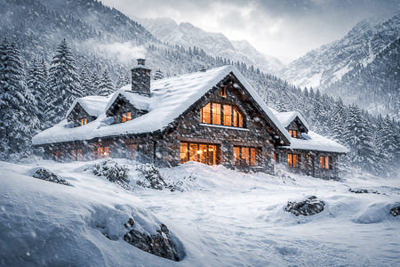
Sobre la imagen aparece el cartel:
Temperatura Exterior: -2º
Temperatura Interior: 22º
INT. CASA PIRENAICA / SALÓN - POR LA MAÑANA
La misma estancia que antes, pero ahora se ve todo diferente.
En el salón hay personas vestidas con ropa oscura, pantalones con
bolsillos, chalecos con el logo de la empresa, cinturones, guantes de
trabajo. Son OPERARIOS que caminan de un lado a otro colocando luces,
cables, etc.
Preparan el set, las cámaras, conectan los cables, cargan las baterías,
limpian escrupulosamente los objetivos y filtros, etc.
ELÉCTRICO (38), bigote y pelo engominado hacia atrás, está subido a un
radiador de pared, mientras encinta un cable en el techo.
Crujido. El radiador se descuelga de la pared y golpea el suelo, clavando
la esquina del radiador en la tarima de madera. ELÉCTRICO cae al suelo de
espaldas. Se retuerce de dolor.
Los OPERARIOS se giran para ver a ELÉCTRICO en el suelo y caminan hacia él
con intención de socorrerlo.
Pasan por delante de NATE (28), un joven atlético, con melena, lampiño y
camiseta de tirantes. Está situado en el centro del salón y su mirada no
es de preocupación sino de odio.
NATE
¡Levantarlo de ahí, coño!
NATE se acerca furioso al ELÉCTRICO. A pesar de sacarle un palmo de altura
y 10 años, NATE habla al ELÉCTRICO con dureza y menosprecio.
NATE
¿Cómo estás? ¿Estás entero? Porque el suelo de madera vale más que tu
nómina anual, cari. Literalmente más. ¿Sabes la fianza que hemos soltado
para esta casa? ¿Sí?
El ELÉCTRICO balbucea.
NATE
Acaba tu puto trabajo y deja de hacerme perder el tiempo. ¡Muévete que
pareces un NPC!
ELÉCTRICO asiente con la cabeza y se gira al resto de OPERARIOS.
NATE
¡Esto es el evento del año, reinas! ¡Quiero luz, vida, drama! ¡Dadle
“glow”, por favor, que parece una película de Garci!
NATE da un sorbo a su TAZA PERSONALIZADA y observa frente a él un gran
cartel de: MACREADY (40), musculoso, bigote, peinado rockabilly, sonrisa
de seductor y camiseta de tirantes.
A NATE le brillan los ojos al mirar la imagen de MACREADY.
INT. CASA PIRENAICA / HABITACIÓN CAMERINO - POR LA MAÑANA
La imagen fija del cartel toma vida y se convierte en la imagen real de
MACREADY frente al espejo, ensayando, hablándose a sí mismo.
MACREADY
Princesos y princesas… Bienvenidos al mejor Especial de Navidad.
Se traba.
MACREADY
Bienvenidos al mejor Especial…
Vuelve a trabarse. Se enjuaga, escupe, se recoloca la mandíbula.
MACREADY
Venga, cariño. Esto es peor que un gatillazo.
Se mira de nuevo fijamente.
MACREADY
(Mirándose)
¿Quién es la reina del baile?
NATE entra. MACREADY se sobresalta.
MACREADY
¡Joder, Nate! ¡No entres sin avisar!
NATE
Perdona Mac. Tengo el tráiler listo...
MACREADY
No tengo tiempo para eso.
NATE
¿No quieres dar el ok?
MACREADY
Si no está bien, no es mi problema.
(Imperativo)
¡Acércate! ¡Debes hacer algo!
MACREADY le lanza un LLAVERO ROJO. NATE lo coge al vuelo.
MACREADY
Vete a buscar a esos idiotas.
NATE
¿Dónde? ¿No saben venir a Andorra?
MACREADY
Llegan en tren a Puigcerdà. Mucha foto con Ferrari, pero ninguno sabe
conducir.
NATE
Yo me encargo.
MACREADY
¡Genial! Tú te encargas. Y dile al equipo que se marchen a mediodía.
NATE
¿Seguro?
MACREADY
Quiero estar sola antes de empezar.
NATE asiente. Recoge una CAJA DE MADERA y se para antes de salir.
NATE
Esto va a ser grande.
MACREADY
Tú eres el número uno. Venga al lío.
NATE sale y cierra la puerta.
MACREADY vuelve al espejo. Se observa sin pestañear.
INT. DORMITORIO / APARTAMENTO ANGELA RAW - POR LA MAÑANA
ANGELA RAW (29), delgada, morena, alternativa, de pelo negro y corto, se
despierta en su cama ya maquillada. El set montado. Junto a la cama, el
móvil está colocado sobre un trípode grabando la escena. Un poco más
retirado, unas luces LED iluminan la escena y nos muestra que todo es un
montaje.
ANGELA RAW termina de estirarse y mira a cámara con dulzura impostada.
INT. COCINA / APARTAMENTO ANGELA RAW - POR LA MAÑANA
ANGELA RAW prepara un desayuno impecable. Todo es limpio. Luminoso.
ANGELA RAW
Hola almas bonitas… Para empezar el día con buena vibra: algo calentito,
algo verde… y algo que te haga sentir que te cuidas. Es un regalo. Y quema grasa.
Guiña el ojo y sostiene la sonrisa mirando a cámara.
Pausa. Su sonrisa desaparece. Empuja, apática, el desayuno al suelo.
Coloca los codos sobre la mesa y se desploma. Manos sosteniendo su cabeza.
ANGELA RAW
Cómo echo de menos unos churros.
INT. BAÑO / APARTAMENTO ANGELA RAW - POR LA MAÑANA
ANGELA RAW publica el video. Se queda en ropa interior frente al espejo.
Examina el vientre, la cintura, el culo. Se pellizca buscando grasa y
rebuzna.
Coge un PARCHE DE NICOTINA. Se lo coloca.
Empieza a cepillarse los dientes. El móvil vibra. AUDIO de CARAMELITO.
CARAMELITO (OFF)
Buah tía, todavía flipo con lo del especial. Con Rudy Macready. ¡Yo me
muero! A ver, sabes que no lo trago, pero ojalá estuviera yo allí. Eres
una cabrona. ¿Has visto los “Stories” de Max? ¡Flipas!
ANGELA RAW deja de cepillarse.
CARAMELITO (OFF)
El que no quería casarse y ahora bodorrio del siglo. Hiciste bien en dejar
a ese hipócrita.
ANGELA RAW coge el móvil y abre “Instagram”. Ve una feliz pareja de novios
se besan con un cartel de “recién casados”.
ANGELA RAW
¡Qué cabrón!
INT. SALÓN / APARTAMENTO JOSÉ FIT - POR LA MAÑANA
JOSE FIT (27), desnudo, levanta unas mancuernas en un “Curl de Biceps”
frente al televisor.
En la tele, ÉL MISMO. Ve su propio vídeo motivacional. JOSÉ FIT, camiseta
de tirantes ancha, pantalón corto, musculoso y con bigote fino, situado
delante de un Ferrari, recitar su texto motivador a cámara.
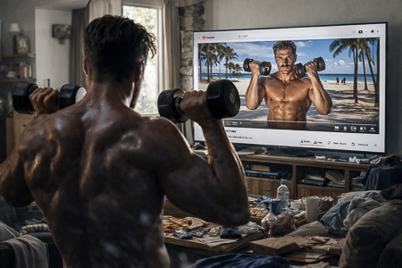
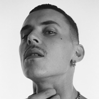
JOSÉ FIT (TV)
El esfuerzo de hoy construye al guerrero de mañana. Cada repetición
cuenta. Disciplina por encima de motivación.
JOSÉ FIT jadea. Suda. Aprieta.
JOSÉ FIT (TV)
El dolor es temporal. La victoria es para siempre. No hay excusas. Ni hoy,
ni nunca.
Deja las mancuernas y se coloca frente a un gran espejo. Se mira
intensamente, toca su pecho, su brazo, sus abdominales. Se mira los
genitales. Asiente satisfecho.
Apaga el televisor.
INT. COCINA / APARTAMENTO JOSÉ FIT - POR LA MAÑANA
Los botes de suplementos llenan los armarios. El fregadero rebosa platos y
vasos sucios. La ropa se amontona en los suelos.
JOSÉ FIT coge una camiseta del suelo y la huele. Hace lo mismo con unos
calzoncillos.
Coloca la avena en un bol y echa cuatro yogures desnatados del Mercadona.
Se sienta a desayunar mientras mezcla el bol.
Vibra el móvil con el recordatorio del ESPECIAL DE NAVIDAD. Apaga el
recordatorio.
JOSÉ FIT
¡Lo vas a petar, tete!
Se da unos golpes en el pecho. Suena el TIMBRE. Se gira molesto.
INT. RECIBIDOR / RELLANO - POR LA MAÑANA
JOSÉ FIT abre la puerta al CASERO (40), gafas a media nariz, polo y
bigote. El CASERO titubea antes de hablar.
JOSÉ FIT
¿Qué?
CASERO
José… perdona. Se acerca la Navidad… he de comprar regalos para los niños
y… necesito que me pagues. Con este ya son dos…
JOSÉ FIT
Lo estás enfocando mal, tete. Ni a ti ni a mí nos cambia la vida dos
meses.
CASERO traga saliva.
JOSÉ FIT
¿Quién te da la estabilidad que te doy yo? ¿Quieres alquilarle el piso a
un pringado que trabaja en el Zara?
CASERO
José, necesito el dinero.
JOSÉ FIT
He firmado con una empresa enorme. Proteína top. Puedo traerte un par de
potes si quieres. Gratis.
CASERO
¿Yo para qué quiero eso?
JOSÉ FIT
Para tus hijos… ¿Qué edad tienen?
CASERO
No voy a dar proteínas a mis hijos. No te enrolles José. No es nada
personal. Sabes que te sigo. Te doy siempre “likes”. Pero…
CASERO lo mira serio.
CASERO
Te doy una semana. Sino, cuento en redes cómo vives.
JOSÉ FIT lo fulmina con los ojos.
JOSÉ FIT
¿Qué mierda dices?
CASERO da un paso para atrás. Ambos se miran. Silencio.
CASERO
¡Una semana!
CASERO da media vuelta para alejarse y se marcha por el pasillo. JOSÉ FIT
empieza a cerrar la puerta lentamente.
JOSÉ FIT
Dale recuerdos a tu mujer.
JOSÉ FIT cierra la puerta de un portazo.
INT. TOCADOR / APARTAMENTO DIVA - MEDIODÍA
LA DIVA (31), mirada intensa, desafiante, teñida de rubio platino, con
escote y bata de seda, enseña a cámara unos botes de leche.
LA DIVA
Dieciséis potes, cari. Dieciséis. Todo etiquetado y numeradito para que el
papi no la líe.
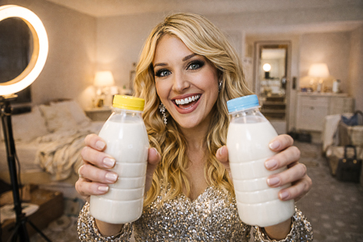
Sostiene dos frascos de leche materna y sonríe.
LA DIVA
¡Y sin perder este escote, qué os pensáis! Bueno… decidme si así se me ve
bien.
Se escuchan los llantos de un bebe.
LA DIVA
Una puede con todo. Os cuento desde Andorra. Sois lo más. Besitos,
besitos.
Lanza besitos a la cámara. Detiene la grabación. Se levanta enérgica y
furibunda hacia la puerta.
INT. SALÓN / APARTAMENTO DIVA - MEDIODÍA
LA DIVA entra abriendo la puerta de par en par. Mira furiosa a su MARIDO
(36), alto y con bigote, vestido con pijama, sostiene a un bebe en sus
brazos.
LA DIVA
¿No puedes callarla un minuto? ¡Se oía TODO!
MARIDO
Tranquila.
LA DIVA
¿Tranquila? Parecerá que soy una mala madre.
MARIDO
Dios te libre. Llora porque quiere leche. ¿No te has dado cuenta?
La bata de LA DIVA está manchada en la zona del pecho. La leche ha
traspasado la camiseta y dejado una mancha visible.
LA DIVA
Ya sé que quiere leche. Por eso me he sacado los dieciséis putos potes.
¿Ok?
LA DIVA se sienta en un sillón, descubre la teta sin pudor y se seca con
un papel mientras sigue hablando con su marido.
LA DIVA
Tú no lo entiendes. Ahora todo el mundo espera que falle.
El bebe vuelve a llorar. El padre intenta calmarlo.
LA DIVA
(Alterada)
¡Dámela ya!
El MARIDO le da al bebé en los brazos de LA DIVA, quién lo amamanta.
LA DIVA
Y otra cosa. La próxima vez que me jodas una toma, te sacas tú la teta.
MARIDO
Yo encanado, ¿eh?
LA DIVA
Pues demuéstralo. Que me van a quedar las tetas como una pasa. Con lo
bonitas que eran, por favor.
MARIDO arquea las cejas.
MARIDO
A mí me siguen pareciendo…
LA DIVA
Sé por dónde vas y todavía no han pasado la cuarentena.
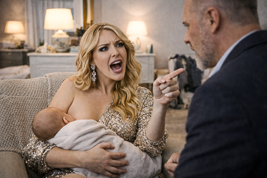
MARIDO
Hombre, casi… Es que así, viéndote.
LA DIVA
No seas cerdo. Coge el móvil y hazme una foto para “insta”. Hoy estoy
adorablemente insoportable.
INT. SALÓN TÍO PACO - MEDIODÍA
Un viejo mueble de salón lleno de fotos que reflejan de forma resumida la
vida de TÍO PACO (56), delgado no, consumido, con gafas de pasta y
camiseta de “Metallica”.
TÍO PACO (OFF)
¿Seguro que no lo has tirado?
MADRE (78). La madre está planchando mientras fuma un cigarro, toma un
“Gin Tonic” y ve la televisión.
MADRE
¡Qué voy a tirar yo! Yo no tiro nada. Lo harías tú cuando te casaste con
esa pelandusca.
TÍO PACO (OFF)
Mamá, no empieces… ¿No hay una caja de cómics?
MADRE
Se quedó con tu casa. La llamo por lo que es.
TÍO PACO (OFF)
Te ha dado una nieta preciosa.
MADRE
Tiene ojos azules.
TÍO PACO (OFF)
Es posible…
MADRE
Como el butanero.
TÍO PACO (OFF)
¡Joder, mamá! Es un gen recesivo. Estadísticamente es posible.
TÍO PACO aparece con un cómic en las manos. En la televisión aparece
Javier Santaolalla.
TÍO PACO
Ya lo he encontrado.
MADRE
Míralo. Ese sí es un científico.
TÍO PACO
¿Por qué? ¿Porque sale en la tele?
MADRE termina de planchar, despliega la camisa frente a su hijo y se lada.
MADRE
¿La doblo para la maleta?
TÍO PACO
Sólo voy dos días, mamá.
MADRE
Llévate el abrigo gordo. Bajará la temperatura. El Tv3 no se equivoca.
TÍO PACO
¿Estarás bien sin mí?
MADRE
Tú vuelve. En 56 años no he pasado una Navidad sin mi hijo…
TÍO PACO
Qué sino… Pocas oportunidades tengo como esta. No quiero pasarme otros 5
años grabando en la buhardilla.
MADRE
Calla. Dame la camisa. Ya te hago yo la maleta.
MADRE quita la camisa a TÍO PACO y se marcha. TÍO PACO coge el mando y
apaga la televisión.
INT. SALÓN SOLÉ - MEDIODÍA
SOLE (35), vestida con botas, tejanos, camisa blanca y chaleco. Tiene la
maleta preparada y trata de cerrar la cremallera de sus botas. SALVA (41),
pelo corto, camiseta de “The Goonies”. Trata de conectar una “Playstation”
al televisor.
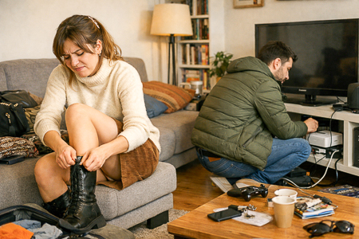
SOLE
(A las botas)
¡Ciérrate, coño! Mierda de cremallera. Mis tobillos no han engordado
tanto… ¿no?
Mira a SALVA. Él pelea con cables de PlayStation.
SALVA
Ponte otra cosa. Total, vas a estar sentada.
SOLE
Ni de coña. Las tengo desde hace diez años. Diez.
SALVA
¿Has visto el “euroconector”?
SOLE
No sé ni que es eso.
SOLE logra cerrar las botas. Se mira en el espejo de la entrada y se
retoca los labios.
SOLE
El otro día vi a Vanessa.
SALVA
Ajá. ¿Qué Vanessa?
SOLE
Charlamos un poco y eso. Quince años. Dos hijos… Sigue en el súper.
¿Alguna vez te imaginas con niños?
SALVA levanta la vista y ambos se miran fijamente. Parece que van a
decirse algo importante. Que están a punto de conectar.
SALVA
Podría… podría usar el cable de antena. Creo que tengo uno.
SOLE
¿Cómo estoy?
SALVA
Bien.
SOLE
Bien no. Dime que lo voy a petar.
SALVA
Lo vas a petar.
SALVA mete el “Final Fantasy VII” en la videoconsola.
SALVA
Yo me quedo aquí. Tú ve. Haz lo tuyo.
SOLE
¿Y luego qué?
SALVA
Luego… ya veremos. Te querré igual aunque vuelves al súper con Vanessa.
SOLE lo mira desolada.
SOLE
Vale. Tranquilo. Pásate tu estúpido juego. No voy a volver. Ni al
“Mercadona”. Ni aquí.
SOLE coge su maleta y sale dando un portazo. SALVA, descolocado, mira la
puerta. Se encoge de hombros y enciende la videoconsola.
SALVA
¿Qué he dicho?
SALVA selecciona “NEW GAME”.
INT. PORTERÍA EDIFICIO - MEDIODÍA
OJOAVIZOR (46), calvo, con gorra, gafas de sol y mochila, está apoyado en
la pared. Se mete un par de chicles en la boca y los mastica
compulsivamente. Escupe los chicles en la mano, los amasa y los pega por
el interior de un buzón.
Sale a la calle.
EXT. CALLE - MEDIODÍA
OJOAVIZOR mira a un lado y a otro mientras camina. Se comporta como si el
FBI lo persiguiera. Saca una GOPRO y empieza a grabarse.
OJOAVIZOR
Poneros ojo avizor antes de que lo borren. Navidad. Consumo. Ruido.
Mientras ellos miran pantallas… otros mueven hilos.
Pasan a su lado unos jóvenes con móviles. Él los evita, protegiéndose,
como si intentan grabarlo a él.
OJOAVIZOR
En Andorra cae la máscara. Nada de embustes. Nada de marionetas. La
cortina de la dominación caerá… y con ella, los que me tomaron por idiota.
Nos vemos en las montañas.
Para de grabar y guarda la cámara. Junto a él pasa un transeúnte.
OJOAVIZOR
(Al transeúnte)
Perdone, ¿la estación…?
El transeúnte lo esquiva sin detenerse, ni mirarlo.
OJOAVIZOR
¡Facineroso!
OJOAVIZOR se ajusta la gorra y echa a andar calle abajo.
EXT. MONTAÑAS - POR LA TARDE
Gran plano aéreo entre las montañas siguiendo al coche. La música continúa
de la anterior escena.
Sobre la imagen aparece el cartel:
Temperatura Exterior: -5º
Temperatura Interior: 22º
INT. COCHE NATE (MONTAÑAS) - POR LA TARDE
NATE conduce, JOSÉ FIT y TÍO PACO van detrás y OJOAVIZOR va de copiloto.
JOSÉ FIT mira su móvil, ajeno a los otros tres.
OJOAVIZOR se remueve en su asiento. Estira el cuello, mueve las piernas.
Observa a los demás de reojo, abre la boca como para decir algo pero la
vuelve a cerrar.
OJOAVIZOR
¿Qué es esto? ¿Es catalán? Uf.
OJOAVIZOR cambia bruscamente de emisora. NATE lo mira.
OJOAVIZOR
No soporto esa mierda.
NATE abre los ojos incrédulo. TÍO PACO está boquiabierto.
JOSÉ FIT
Ya te digo…
TÍO PACO
Perdón… ¿qué ha dicho?
NATE
Perdona, pero esos comentarios NO se dicen en el show.
OJOAVIZOR
¿Porque desmonetiza?
NATE cambia de emisora. Vuelve a poner la música en catalán. OJOAVIZOR la
vuelve a cambiar y ambos forcejean.
OJOAVIZOR
El copiloto elige. Es una norma no escrita.
NATE
En mi coche no.
TÍO PACO
Ay, Dios…
TÍO PACO mira al frente, se sorprende y de repente.
TÍO PACO
¡Cuidado!
NATE mira al frente y da un giro brusco de volante y el coche derrapa un
segundo.
OJOAVIZOR
¡No frenes! ¡Si ves un animal, Atropéllalo!
TÍO PACO
No era un animal.
TÍO PACO se gira y ve dos EXCURSIONISTAS que saludan. TÍO PACO los mira
extrañado.
OJOAVIZOR
¡Cretinos!
EXT. CARRETERA - POR LA TARDE
Los AUTOESTOPISTAS dejan de saludar y se giran y, sonrientes, al coche que
se acerca.
INT. COCHE SOLE - POR LA TARDE
SOLE conduce, LA DIVA va de copiloto. Desde el asiento trasero, ANGELA RAW
revisa los “Stories” de su ex novio.
SOLE
Viajar en coche siempre me recuerda a cuando pensaba que iba a ser
alguien.
ANGELA RAW frunce el ceño.
SOLE la mira a través del retrovisor.
SOLE
Por eso dejé la banda. Creía que me iba a comer el mundo.
LA DIVA
Y aquí estás. Lo has conseguido, reina.
SOLE
Salva siempre me apoyó. Ahora solo le interesa la Play.
ANGELA RAW
Bueno. Diez años de relación… pesan.
LA DIVA
No, cariño. Da igual el tiempo que lleves. La pasión es la pasión. No es
el tiempo, es la pereza.
SOLE
Exacto.
LA DIVA
Por eso hay que atarlos. Un hijo.
Una hipoteca. Algo que pese. Yo lo llamo seguridad extra.
ANGELA RAW pone cara de circunstancias.
ANGELA RAW
(Para si misma)
Y luego dicen que el amor es gratis…
LA DIVA
¿Tú crees que la gente te quiere por ser natural? Por cierto… Tu alcance
está decayendo.
ANGELA RAW levanta la vista indignada.
ANGELA RAW
¿Perdona?
LA DIVA
Yo no quiero decir nada, pero… tú ya no tienes el alcance de antes. Es un
hecho, cariño.
ANGELA RAW
A mí eso no me importa. Yo cuento mi vida. Soy natural. Eso la gente lo
valora.
LA DIVA
Es súper natural poner morritos en los ““Selfie”s”.
SOLE
Sí, súper natural levantarte a las cinco para hacer yoga en bikini.
ANGELA RAW
Vosotras no lo entendéis. El yoga es conexión. Conciencia. Si pudiera, lo
haría desnuda.
SOLE
Sí puedes. En “Onlyfans”.
LA DIVA
(A Sole)
Bien dicho.
(A Angela Raw)
No te preocupes. Aquí todas sabemos que el bikini da seguidores. Es lo que
hay por ser mujer.
ANGELA RAW
Yo no vendo mi cuerpo. “Onlyfans” es lo más denigrante…
LA DIVA
Todos lo vendemos. Unos enseñan más. Otros menos.
SOLE
Yo igual abro un “OnlyFans”. Solo pies. Creo que eso tiene bastante tirón.
Hay mucho fetichista suelto por ahí.
LA DIVA
Suena bien. Los pies funcionan. Seguro que lo petas. Yo empecé así.
ANGELA RAW vuelve a mirar el móvil ignorando a sus compañeras.
SOLE
¿Vas a retomarlo?
LA DIVA
¿El qué?
SOLE
El “Onlyfans”. Después del embarazo…
LA DIVA
Ni de coña.
ANGELA RAW también levanta la cabeza sorprendida.
LA DIVA
Claro Reinas… He facturado más que nunca.
INT. COCHE NATE - POR LA TARDE
Volvemos al coche de los chicos. JOSÉ FIT trata sin éxito de cargar el
“Feed” de “Instagram”.
JOSÉ FIT
El internet es una mierda. No carga nada.
NATE
Es por las montañas, cariño.
OJOAVIZOR
Seguro que las pistas de esquí tienen cobertura.
TÍO PACO mira afuera.
TÍO PACO
Mi madre ha dicho que venía un frente fuerte. Con esto del cambio
climático…
OJOAVIZOR
Tu madre ve demasiada tele. No hay ninguna emergencia climática. Es un
invento ridículo para controlar a la gente dormida.
TÍO PACO
Los datos no vienen de la tele.
OJOAVIZOR
Los datos vienen de quien paga.
NATE
Reservad esas lenguas para el debate. Que esto no es “Twitter”.
JOSÉ FIT
¿Y si cortan la carretera?
TIO PACO
¿Tenemos bastante comida?
NATE
El pueblo está a cerca. Si os falta tabaco… camináis.
El coche sigue subiendo.
INT. CASA PIRENAICA / HABITACIÓN MACREADY - POR LA TARDE
MACREADY corta unas rodajas de pepino. Se tumba en la cama, y se coloca
las rodajas de pepino sobre los párpados. Cubre su rostro con una toalla.
Busca el móvil a tientas sobre la colcha.
El viento se cuela a través de una ventana y unos papeles caen al suelo.
MACREADY se saca un pepino para observar lo que ocurre.
Cierra la ventana y mira a su alrededor inquieto.
MACREADY
(Gritando)
¿Nate?
MACREADY espera oír una respuesta.
Recoge los papeles del suelo. Uno se le escapa y debe andar para cogerlo.
Antes de recoger el papel vemos una imagen de La Diva. Parecen dosieres
con información clasificada, como la que daría la CIA o un detective que
investiga un caso. Guarda los papeles en un cajón.
Sale de la habitación.
El ruido de los coches llegando a la casa lo saca de su estado. Por la
ventana ve que los coches están aparcando en el exterior.
EXT. CASA PIRENAICA - POR LA TARDE
Los coches están aparcados en el exterior y la gente baja para coger sus
maletas. Se saludan entre ellos mientras se hacen algún “Selfie”.
NATE cierra el maletero después de entregar las últimas maletas. Mira a su
alrededor, como si escuchara algo en el bosque. Se oye el viento. NATE
mira al cielo.
Gran plano aéreo de la casa. Los personajes parecen hormigas entrando en
la casa hasta que una gran nube gris se sitúa sobre ella y cubre la
imagen.
INT. CASA PIRENAICA / ESTUDIO - POR LA TARDE
MACREADY se levanta de la silla. Al fondo ve a todos los personajes
entrando. Sonido de maletas, murmullo, besos, abrazos. Camina hacia ellos
preparándose para dar su mejor show.
Antes de salir apaga la luz.
INT. CASA PIRENAICA / RECIBIDOR – POR LA TARDE
LA DIVA sonríe a JOSÉ FIT. Y mira a su alrededor impresionada,
LA DIVA
Hola, cariño… Wow. Esto es un planazo.
JOSÉ FIT
¿Cómo estás?
JOSÉ FIT extiende la mano. LA DIVA se lada. Él la besa como si estuviera
en Lo que el viento se llevó. LA DIVA se sonroja y hace una caída de ojos.
JOSÉ FIT sonríe sin dejar de mirarla.
TÍO PACO y ANGELA RAW se ofrecen mutualmente el paso antes de entrar.
TÍO PACO
¿Te ayudo con el equipaje?
ANGELA RAW
Gracias. Viajo ligera.
SOLE mira la casa con asombro.
SOLE
¡Menudo casoplón! ¿Los anteriores propietarios murieron de forma horrible?
MACREADY aparece en escena.
MACREADY
¡Solo algunos! El último seguro que no.
Todos se giran hacia él. Él pasa de largo frente a ellos.
NATE
Al final siempre se salva uno.
SOLE y NATE se sonríen.
OJOAVIZOR entra el último y cierra la puerta.
OJOAVIZOR
(Para sí mismo)
Bonito teatro… ¡Que empiece el show!
MACREADY sube algunos escalones pero se gira para responder a OJOAVIZOR.
MACREADY
(Señalándole)
Exacto, amor. Esto empieza fuerte.
MACREADY se queda parado frente a ellos como para darles un discurso.
MACREADY
Damas, caballeros… y criaturas fabulosas: Bienvenidos al mejor Especial de
Navidad. Pero más allá de pensar en los “Likes” y los “Followers”, que no
se os olvide lo más importante. Habéis venido a brillar. Así que ahora:
relax. Habitaciones, duchita, baño de espuma si queréis.
LA DIVA saca el móvil y se hace un “Selfie” con JOSÉ FIT. SOLE también se
acerca a ellos para la foto.
OJOAVIZOR
(Para sí mismo)
Ya…
MACREADY
Antes de cenar, os enseño el plató. Nuestro campo de batalla. Mañana
empezamos de verdad.
LA DIVA
¿Tiempo para una ducha?
MACREADY
Date un baño de espuma si quieres, reina.
Se disuelve la reunión. El grupo se dispersa.
JOSÉ FIT
(Indicando la maleta de LA DIVA)
Por favor.
JOSÉ FIT se ofrece a llevar la maleta de LA DIVA. Y ella está encantada.
LA DIVA
Qué caballero.
SOLE
¿Nadie se ofrece a llevar la mía?
NATE se acerca a Sole.
NATE
Yo te ayudo.
SOLE levanta la maleta para dársela a NATE.
MACREADY
¡Nate! Ven.
NATE
Es un minuto.
MACREADY
Puede solita. Tiene más músculo que tú.
MACREADY pasa por delante de SOLE y se miran.
MACREADY
No me lo quites.
MACREADY se marcha.
SOLE y NATE se miran.
SOLE
Alguien te lleva del bolsillo.
MACREADY (OFF)
¿Nate?
NATE se encoge de hombros. Y cada uno va por un lado.
SOLE
(Para si misma)
Yo te salvaré.
SOLE carga su maleta por la escalera.
INT. HABITACIÓN ANGELA RAW - ANOCHECER
ANGELA RAW entra en su habitación. Deja su mochila sobre la cama. Coloca
una piedra, una pulsera, un pequeño altar improvisado.
INT. HABITACIÓN JOSÉ FIT - ANOCHECER
JOSÉ FIT saca cuidadosamente los “tuppers” de comida, mientras los cuenta
y coloca sobre una cómoda. La etiqueta indica claramente día y desayuno,
comida o cena. Cuando parece que ya está empieza a sacar cartones de
huevos.
INT. HABITACIÓN SOLE – ANOCHECER
SOLE consigue sacarse una de las botas y la lanza.
SOLE
Dios, voy a tirar esas malditas botas a la basura.
Coge la otra y tira fuerte. Al sacarla queda exhausta y se tumba en la
cama. Lleva la barbilla al pecho para alcanzar a ver los pies.
SOLE
Juntar los dedos de los pies…
SOLE mueve los dedos de los pies encogiéndose y estirándose.
INT. HABITACIÓN ANGELA RAW - NOCHE
ANGELA RAW saca el móvil y consulta el perfil de su ex. Hay algún video
más de la boda. La pareja de novios disfruta, se abrazan, se besan.
Abre “Whatsapp” e inicia conversación con “Agustín”. Envía un mensaje de
audio. Se pasa por la habitación mientras habla.
ANGELA RAW
Bueno Agustín, que me he enterado del “supernotición”. He visto lo de la
boda.
(Pausa)
Felicidades, de verdad. Todo ha sido muy… rápido. Solo quería decirte que
me alegro por ti. Aunque… ya sabes. No hace tanto que lo dejamos. Y sí,
aún pienso en ti a veces. Bastante. Eras… eres… una persona muy especial
para mí. No quiero incomodar, lo sé, ahora es complicado… pero me gustaría
vernos algún día. Cuando puedas.
(Silencio)
No sé, supongo que… al ver los “Stories” he pensado: “esa podría haber
sido yo”. Nada más. Un abrazo.
Envía el mensaje. Se queda sentada, inmóvil. La pantalla del móvil se
apaga.
INT. HABITACIÓN SOLE – NOCHE
SOLE, restregándose una piedra pómez en un talón, envía también un mensaje
de audio a Salva.
SOLE
Pues nada, ya me he largado. Tres horas y media de coche hasta la jodida
cima de esta maldita montaña… y ni un puto mensaje tuyo. Ni uno.
(Imitándolo)
¿Cómo estás Sole? ¿Has llegado bien?
(Su tono normal)
La vida es así, ¿no? Pues nada. Me pregunto en cuál de tus tres P estás
ahora: partida, paja o pizza. Tranquilo, ¿eh? Tienes todo el fin de
semana.
Envía el audio y se mira al espejo afirmándose.
INT. HABITACIÓN TÍO PACO – NOCHE
TÍO PACO hace una videollamada con su madre.
TÍO PACO
Mamá ¿Dónde está el jersey del cangurito?
MADRE
Ese jersey es horrible. Te hace mayor.
TÍO PACO
Quería ponérmelo.
MADRE
No había sitio para meter el polar.
TÍO PACO
La calefacción está a tope y hay chimenea.
MADRE
El frío siempre llega.
Mientras habla, TÍO PACO, ve pasar por el pasillo a JOSÉ FIT, cargado con
sus “tuppers”.
INT. BAÑO LA DIVA - NOCHE
LA DIVA, en albornoz, tiene todo preparado para darse un baño antes de la
cena de grupo. Abre el grifo de la bañera. El agua fluye haciendo espuma.
LA DIVA sostiene el móvil en la mano, preparada para un “Selfie”. Se mira
en el móvil, revisando el encuadre. Baja su mirada y con un leve gesto
abre el escote del albornoz.
LA DIVA
(Susurrando)
“Mood” del día: divina…
Se hace una foto. Deja el móvil sobre el baño muy cerca de la bañera, aún
llenándose.
INT. HABITACIÓN OJOAVIZOR – NOCHE
OJOAVIZOR saca de su mochila “El Libro de Enoc” y lo coloca sobre la
mesita de noche. Después saca una pistola y la coloca también sobre la
mesita de noche. Lo observa un instante y mete todo en el cajón de la
mesita de noche.
OJOAVIZOR se gira, como reaccionando al agua de la bañera de LADIVA. Pone
atención a un cuadro.
OJOAVIZOR descuelga el cuadro de la pared y mira, con el ceño fruncido,
como si esperara encontrar algo detrás.
INT. BAÑO LA DIVA – NOCHE
LA DIVA se desviste. El espejo se empaña y LA DIVA se vuelve una mancha
borrosa.
INT. HABITACIÓN OJOAVIZOR – NOCHE
OJOAVIZOR se decepciona, en la pared no hay nada. Vuelve a colocar el
cuadro en la pared.
Detrás de la cuadro hay escrito “MORIR CABRONES”. La última R de la
palabra Morir está tachada y sustituida por una “D”.
INT. HABITACIÓN ANGELA RAW – NOCHE
ANGELA RAW se prueba frente al espejo varias prendas de ropa colocándolas
delante suyo, sujetas con una percha, sin llegar a ponerlas. Al alternar
entre varias prendas su cuerpo se va mostrando fugazmente. ANGELA RAW se
mira fijamente en el espejo, agrietado en una esquina.
INT, PASILLO – NOCHE
JOSÉ FIT amontona los “tuppers” sobre NATE, quién los mira sorprendido.
NATE
Wow… qué pro. Están numerados por fecha.
JOSÉ FIT
No son fechas. Son calorías.
NATE
Si te equivocas de orden…
JOSÉ FIT lo mira serio, sin humor.
JOSÉ FIT
Gracias.
NATE
No hay de qué. Reina del fitness.
NATE se marcha con los “tuppers”.
JOSÉ FIT vuelve por el pasillo y ve OJOAVIZOR intentar mirar por el hueco
entre abierto de la puerta de otra habitación. OJOAVIZOR disimula al ser
descubierto y JOSÉ FIT pasa a su lado.
OJOAVIZOR
¿Qué pasa colega?
JOSÉ FIT
¿Colega?
Ambos cruzan las miradas desafiantes y se alejan. JOSÉ FIT entra en su
habitación sin quitarle el ojo de encima.
INT. HABITACIÓN SOLE - NOCHE
SOLE se arregla delante del espejo. Se pregunta a sí misma:
SOLE
¿Quién parte la pana?
Después de decirlo espera respuesta. Sale de la habitación.
INT. COCINA – NOCHE
NATE abre la puerta de la nevera y empieza a guardar la comida de JOSÉ FIT
en el frigorífico. Cierra la puerta y, inesperadamente, SOLE está tras
ella. NATE se asusta.
SOLE
¿Todo eso es tuyo?
NATE
No, cariño, yo como poquito…
SOLE le toca el brazo, NATE se sorprende.
SOLE
Bueno, no está mal. ¿Es de sujetar la cámara?
NATE cambia de tono, haciendo la conversación más directa.
NATE
Hago ejercicio…
SOLE
¿Te apetece algo antes de cenar? ¿Una fruta?
NATE
Bueno.
SOLE abre los ojos.
SOLE
Algo rápido…
SOLE y NATE recortarn la distancia.
NATE
Podemos… buscar algo.
SOLE
¿Y qué tipo de fruta te gusta más? ¿La fruta dulce como los higos… o mejor
un rico plátano con potasio?
NATE
Lo importante es no quedarse con hambre.
La voz de MACREADY le interrumpe.
MACREADY (OFF)
(Gritando)
¡Nate! ¡Llevo horas llamándote! Prepare a todo el mundo. En diez minutos
cenamos.
NATE mira a SOLE y baja la mirada.
SOLE
¿Siempre es así?
NATE
Él siempre… me necesita.
SOLE
Sí, ya… No me extraña.
SOLE le guiña el ojo. NATE se marcha. SOLE guarda el plátano de la cocina
y se marcha.
INT. CASA PIRENAICA / COMEDOR - POR LA NOCHE
Todos están sentados en una gran mesa, iluminada por una luz cálida. Los
platos y las comas a la mitad.
LA DIVA
La comadrona flipó. Recuperé mi figura antes que la niña su peso.
JOSÉ FIT
¿Y qué rutina hacías durante el embarazo? ¿Cardio? ¿Pilates? Ayuno
intermitente?
LA DIVA
Ayuno, cariño... Vomité medio embarazo. Un horror. No sé cómo hay que
tienen ganas de otro.
TÍO PACO
Tiene razón. Yo con una tuve suficiente. Pero, los hijos merecen la pena.
(Pausa)
Cuando no te mandan a la mierda.
TÍO PACO enseña a ANGELA RAW fotos de su hija adolescente.
TÍO PACO
Dice que quiere ser como tú.
ANGELA RAW
Qué mona. Solo necesita creérselo... y una buena estrategia.
OJOAVIZOR levanta su copa.
OJOAVIZOR
Propongo un brindis. Por…
LA DIVA
(Interrumpe)
¡Por un finde inolvidable!
Todos brindan, menos JOSÉ FIT. LA DIVA lo busca son su copa.
JOSÉ FIT
No bebo.
LA DIVA
Pues brinda con agua, campeón.
SOLE
¿Has traído tu propia comida?
JOSÉ FIT
Estoy en fase de definición.
OJOAVIZOR
Yo tampoco me fiaría de esta comida.
ANGELA RAW
Hay que confiar más… Y adaptarse. Siempre que haya opciones veganas…
Risas en varios puntos de la mesa. OJOAVIZOR no se inmuta.
OJOAVIZOR
En ambos casos pueden hacerse excepciones. La supervivencia obliga.
ANGELA RAW
Eso cierto. En mis viajes, tuve que comer lo que me daban.
SOLE
¿Dónde has estado tú?
ANGELA RAW
Amazonas, Mongolia, Nepal. Estuve 3 meses en la Polinesia… comiendo lo que
me preparaban esas pobres mujeres con sus propias manos.
MACREADY interviene.
MACREADY
Un momento, Ángela. ¿En la Polinesia… tres meses? Justo en esas fechas nos
vimos en Miami. ¿No?
Todos miran a ANGELA RAW, quién sonríe forzada.
ANGELA RAW
¿Perdón?
MACREADY
Dices que estuviste tres meses en la Polinesia… pero eso fue justo cuando
nos encontramos en Miami y te hablé del especial de Navidad. ¿Me equivoco?
El ambiente cambia. Todos la miran. ANGELA RAW intenta mantener la
sonrisa.
ANGELA RAW
Bueno, quizá no fueran tres meses… Allí el tiempo fluye distinto.
MACREADY
(Cortante)
Sí, pero tus directos no pararon. ¿Quién los grababa?
ANGELA RAW
(Irritada)
¿Te importa?
Una ráfaga de viento golpea las ventanas. Se abren de par en par y una
fuerte ventisca que entra en la sala.
LA DIVA
¡Ay, joder!
OJOAVIZOR
(Irónico)
Ya empezamos con efectismos baratos.
La ventisca se intensifica. Se va la luz. Solo quedan las luces de los
móviles.
MACREADY
(Autoritario)
¡Nate!
OJOAVIZOR
(Entusiasmado)
¡Está bien logrado! ¡Parece real!
TÍO PACO
¿Cierro las ventanas?
SOLE
Esto no es viento normal.
El comedor se tiñe de luces azules y parpadeos.
EXT. CASA PIRENAICA - POR LA NOCHE
Fuera todo es oscuridad. La casa a penas es una sombra en la ventisca.
Dentro las luces de los móviles.
A través de una de las ventanas, TÍO PACO y ANGELA RAW intentando
cerrarla.
ANGELA RAW
(Gritando)
¡Sujétala!
INT. CASA PIRENAICA / COMEDOR - POR LA NOCHE
JOSÉ FIT se suma a TÍO PACO y ANGELA RAW para empujar las ventanas con el
hombro. Una última ráfaga les lanza nieve y polvo a la cara antes de que
la ventana encaje con un golpe seco. Los tres se miran, jadeando.
OJOAVIZOR aplaude.
OJOAVIZOR
Menudo espectáculo... hasta parece real.
NATE
(A Macready)
¿Esto estaba… preparado?
MACREADY
¿Preparado? ¿Cómo narices va a estar preparado sino hay ni una cámara
grabando?
SOLE
Esto no estaba en el guión…
TÍO PACO
Quizá se bajó el diferencial.
MACREADY
(Autoritario)
¡Nate! Soluciona eso cuanto antes. Al sótano. ¡Ya!
NATE
¿Yo? Lo mío es la cámara…
JOSÉ FIT
Si hace falta, bajo yo.
NATE
Buena idea. Yo te acompaño y lo grabamos. Igual sale un “Story” chulísimo…
MACREADY se gira hacia él con una expresión gélida.
MACREADY
No, bajo yo. Tú me grabas a mí. Para eso te pago.
LA DIVA mira su móvil.
LA DIVA
Pocos “Stories” vas a hacer tú… Sin cobertura. Ni una rayita.
(Para si misma)
Vale… mantén la calma… qué remedio.
Todos revisan sus teléfonos.
SOLE
Ahora sí parece una peli de terror. Yo no bajo al sótano ni muerta.
MACREADY
Solo hay que mover un par de interruptores. No se necesitan “muchos
conocimientos técnicos” para eso.
Mientras hablan, ANGELA RAW se levanta sin hacer ruido. Su silueta cruza
la sala en penumbra. SOLE la ve de reojo.
SOLE
¿Ángela? ¿A dónde vas?
ANGELA RAW no responde. Desaparece tras una puerta lateral que da al
pasillo.
SOLE
Se ha ido…
Nadie la escucha.
MACREADY pone su mano en el hombro de NATE.
MACREADY
Ve por la cámara.
Camina hacia el fondo, la luz del móvil temblando en el suelo.
LA DIVA
Andorra. ¿En qué momento decidimos venir al culo de Europa?
El viento sigue sonando colándose en la casa.
INT. ESCALERAS SÓTANO - POR LA NOCHE
Las luces de los móviles dibujan círculos de luz sobre los escalones que
descienden a la oscuridad. Crujidos a cada paso. Respiraciones contenidas.
MACREADY va delante, linterna en mano, con su mirada de “acero azul” y sus
morritos. La luz vibra con cada paso.
MACREADY
(Voz baja)
¿Así va bien?
Frente a él, NATE avanza de espaldas sosteniendo la cámara.
NATE
Muy “dark”, falta luz… Puedo grabarte en plan “Resident Evil”.
MACREADY
Buena idea.
Se recolocan: NATE detrás, cámara en mano, sobre la espalda de MACREADY.
De pronto, un reflejo. Algo se mueve en el fondo.
MACREADY
¿Has visto eso?
MACREADY se detiene, ilumina con la linterna siguiendo la pared hasta la
esquina. En el cono de luz, durante un segundo, se distingue algo que se
esconde tras una esquina: una pierna, quieta un segundo antes de
desaparecer tras la esquina.
Los dos gritan al mismo tiempo. Se dan media vuelta y corren
atropelladamente hacia la escalera, empujándose, tropezando, chocando con
la pared. MACREADY se abre paso con codazos para ponerse delante.
MACREADY
¡Déjame pasar! Soy la protagonista, cariño.
MACREADY sube rápidamente la escalera. NATE se tropieza y cae. Busca la
linterna. Una mano aparece en la oscuridad y coge el móvil. NATE lanza un
grito hasta ver que es ANGELA RAW. MACREADY se asoma desde lo alto de la
escalera.
ANGELA RAW
(Riendo)
¿Eso lo has grabado?
NATE afirma con la cabeza, todavía sin poder hablar.
MACREADY
¡Bórralo de inmediato!
MACREADY vuelve a bajar la escalera.
ANGELA RAW
Vaya susto, ¿eh? Parecéis dos “Boy Scouts”.
MACREADY
Casi me meo en las bragas.
ANGELA RAW
Como tardabais, ya revisé los diferenciales… nada. No funcionan. Debe ser
la línea exterior que alimenta la casa.
MACREADY pasa por delante de ANGELA RAW.
MACREADY
(A Nate)
Graba.
MACREADY se encamina hacia el cuadro eléctrico. NATE lo sigue, grabando.
ANGELA RAW se cruza de brazos y los observa.
Ambos manipulan los interruptores. Los suben. Los bajan. Nada.
MACREADY
(Murmurando)
Nada. El problema viene de fuera.
MACREADY se gira hacia NATE.
MACREADY
Alguien tendrá que salir.
Nate traga saliva. Los dos se quedan mirándose.
INT. CASA PIRENAICA / ENTRADA - POR LA NOCHE
MACREADY, NATE, ANGELA RAW, JOSÉ FIT y TÍO PACO abren la puerta principal.
El pomo gira. El sonido metálico resuena en toda la casa. En cuanto abren
unos centímetros, una ventisca brutal empuja la puerta. Las cortinas se
levantan como alas.
LA DIVA grita. TÍO PACO retrocede tropezando con una silla. ANGELA RAW
intenta sujetar la puerta, pero el viento la empuja hacia atrás.
ANGELA RAW
¡No puedo!
JOSÉ FIT se lanza a ayudar, y empuja fuerte.
JOSÉ FIT
¡Empuja! ¡Vamos, empuja!
Entre varios logran cerrarla. CLAC seco. Todos se quedan jadeando. Las
partículas de nieve flotan en el aire, iluminadas por los móviles.
SOLE
(Ahogada por la risa nerviosa)
Vale… no salimos. ¿Y si esperamos a que esto pase?
MACREADY
Da igual.
(Pausa)
Fuera tampoco había nada para nosotros.
El viento vuelve a rugir al otro lado de la puerta.
INT. CASA PIRENAICA / SALÓN - POR LA NOCHE
Todos están en los sofás, iluminándose con la luz temblorosa de los
teléfonos.
OJOAVIZOR
(Perplejo, encantado)
Hay que reconocerlo… Esa ventisca, el apagón, el suspense… ha sido
impresionante.
(Sonríe)
Bravo. Os felicito.
MACREADY
¿De qué hablas?
OJOAVIZOR
Vamos, hombre. Está todo preparado. ¿no?
MACREADY
No. Reservad energías. Mañana debatís lo que queráis.
LA DIVA revisa su móvil.
TÍO PACO
Con suerte, mañana todo volverá a la normalidad. Dormir será lo mejor.
SOLE
¿En serio? ¿Dormir? Hacemos unas copas, ¿no?
MACREADY
(Asintiendo a SOLE)
Exacto. Tú si tienes clase. Tengo unas botellas guardadas. Nate, cariño,
sé bueno y ve a buscarlas.
NATE
(Temiendo la respuesta)
¿Al sótano?
MACREADY
(Alzando una ceja)
Claro. ¿Dónde sino?
NATE suspira resignado y se marcha con su móvil como linterna.
TÍO PACO
(Negando con la cabeza)
Yo paso. A mi edad, una noche loca y luego una semana con ganas de
ahorcarme.
LA DIVA
Yo mataba por una copa… pero mañana tenemos programa. Si duermo poco me
salen ojeras.
JOSÉ FIT
Yo también me retiro. Por la noche la musculatura se regenera mejor.
SOLE
Esto parece un retiro espiritual.
ANGELA RAW
Meditar y relajarse es la mejor forma de sanar. Yo cada noche pongo mi
audio hipnótico, y antes de llegar al diez ya estoy en Pandora.
MACREADY
(Boquiabierto)
Bien. Yo aprovecharé para repasar el guion.
Se levanta, marcando autoridad.
MACREADY
(Reivindicando)
Mañana haremos el mejor programa de Navidad de la historia.
Todos se levantan y se van a sus habitaciones. SOLE queda sola.
SOLE
(Suspirando)
Pues nada, buenas noches, mundo cruel.
Silencio. NATE aparece con dos botellas de vino.
NATE
(Sonriente)
Eh, ¿ya se han ido todos?
SOLE
No todos…
NATE le sonríe.
MACREADY (OFF)
¡Nate!, te espero arriba…
SOLE
Otra vez será. Te llama tu dueño.
NATE
(Incómodo)
Sí… ya voy.
NATE, se levanta, suspira y se marcha.
INT. CASA PIRENAICA / PASILLO DORMITORIOS - POR LA NOCHE
El grupo se dispersa por el pasillo apenas iluminado por sus móviles.
Puertas que se cierran, susurros, pestillos. Silencio.
JOSÉ FIT camina junto a LA DIVA, le señala una puerta.
JOSÉ FIT
Esta es la tuya.
LA DIVA
Vaya. Te ha llevado tiempo averiguarlo… campeón.
JOSÉ FIT
Solo intento ser amable.
LA DIVA
No te emociones…
LA DIVA entra en su habitación. JOSÉ FIT se queda quieto un segundo y
sonríe para sí.
JOSÉ FIT
Mejor suerte la próxima vez…
Antes de entrar en su habitación, JOSÉ FIT observa a NATE que sale de su
habitación con una caja de madera entre sus manos. Se dirige a la
habitación de MACREADY.
JOSÉ FIT
(Para sí)
Lameculos…
JOSÉ FIT termina de cerrar la puerta. NATE se detiene frente a la puerta
de MACREADY. Levanta la vista: SOLE está en el pasillo.
SOLE
Bonita caja.
NATE se queda quieto. Ella saca el bolsillo de su pantalón.
SOLE
Hay otros bolsillos.
NATE guarda silencio. Mira la puerta de Macready, luego a SOLE, luego otra
vez la puerta. Finalmente gira el pomo y entra.
INT. CASA PIRENAICA / HABITACIÓN MACREADY - POR LA NOCHE
La habitación está tenuemente iluminada por una linterna colocada como
lámpara de mesita de noche. El ambiente es cálido.
MACREADY, de espaldas frente a un gran espejo, lleva puesta solo una
camiseta fina y un pantalón de seda. Se masajea el cuello.
NATE entra con una caja de madera entre las manos.
NATE
Ya estoy aquí.
MACREADY
(Sin mirarlo)
Deja eso y cierra.
NATE deja la caja sobre la cama y se sienta junto a MACREADY.
MACREADY
(Girándose hacia él)
Mi cuerpo ya no es lo que era… Demasiadas entrevistas, demasiados
directos, demasiada gente opinando…
NATE
Claro... el cuerpo pasa factura.
NATE empieza el masaje. MACREADY suspira de placer.
MACREADY
No, Nate. El cuerpo no. La mediocridad. Eso pesa… Mmmmm… tienes unas manos que podrían devolver la fe al menos creyente.
NATE aprieta. El aceite resbala, brilla bajo la luz anaranjada.
MACREADY
(Gruñendo, aliviado)
Eso… justo ahí. Más presión. Más abajo.
NATE obedece. El sonido del aceite frotándose contra la piel. Se miran en
el espejo: NATE, incómodo; MACREADY, gozando.
MACREADY
¿Tú me admiras, Nate?
NATE
Lo justo para no perder el empleo.
MACREADY
Eso es sinceridad. Por eso funcionamos. Cada uno en su sitio. Yo delante.
Tú detrás. Así todo encaja.
Solo se escucha el roce húmedo de las manos.
MACREADY
Más aceite.
MACREADY cierra los ojos y sonríe. NATE masajea con más fuerza.
MACREADY
Sigue.
NATE aprieta el pote de aceite soltando un chorro que resbala por la
espalda de MACREADY.
El aceite gotea sobre el suelo.
INT. CASA PIRENAICA / HABITACIÓN OJOAVIZOR - POR LA NOCHE
Silencio absoluto. El viento resuena lejano. OJOAVIZOR yace en la cama,
los ojos abiertos. Su móvil reproduce una LOCUCIÓN.
LOCUCIÓN (OFF)
Cada palabra te llevará a un estado más profundo… Al llegar a diez
entrarás en Pandora. Uno…
Se incorpora despacio. Toma el móvil, enciende la linterna.
Recorre la habitación con su linterna. Revisa cada rincón.
Se agacha, mira bajo la cama. Solo polvo. Se levanta y abre el armario.
Nada.
Apunta la linterna a una esquina del techo: una pequeña rejilla metálica.
Se acerca.
OJOAVIZOR
(Riendo)
¡Lo sabía!
Coloca el móvil sobre una mesa. Se sube a la silla, tambaleante. Su sombra
se proyecta enorme en la pared, como un monstruo que lo imita. Sus dedos
rozan el metal. Él sonríe, hipnotizado.
OJOAVIZOR
(Extasiado)
Eureka…
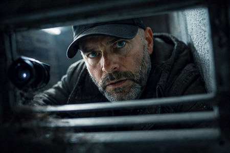
FUNDIDO A NEGRO
EXT. CASA PIRENAICA - AMANECER
Silencio absoluto. La casa está sepultada bajo un metro de nieve, sus
ventanas selladas por un blanco uniforme. El cielo sigue gris.
Sobre la imagen aparece el cartel:
Temperatura Exterior: -12º
Temperatura Interior: 16º
INT. CASA PIRENAICA / CASA - POR LA MAÑANA
El sol gris entra apenas por las ventanas. NATE abre la llave del gas.
Click, click. Nada. Intenta encender un fogón.
NATE
Los fogones no van.
TÍO PACO prueba un interruptor de la pared. Silencio. Nada.
TÍO PACO
Nada. Ni luz, ni calefacción…
LA DIVA
¡No hay agua caliente!
SOLE
Mi móvil está casi muerto.
TÍO PACO
Sin calefacción, la temperatura puede caer a cero en cuestión de días u
horas.
NATE se saca del bolsillo un “powerbank” y lo ofrece a SOLE.
SOLE sonríe, extiende la mano. Antes de cogerlo, MACREADY irrumpe,
apartando el “powerbank”.
MACREADY
Guárdalo. Reservarlo para emergencias.
Silencio. Todos lo observan.
MACREADY
(Suspira)
No quiero alarmar, pero… estamos atrapados.
Un murmullo general recorre el grupo.
TÍO PACO
Bueno… Lo importante es mantener la calma.
JOSÉ FIT
Solo es nieve. No dramaticéis.
ANGELA RAW
No nevará eternamente.
De pronto, CLAC. OJOAVIZOR deja sobre la mesa una cámara espía. Todos lo
miran sobresaltados.
OJOAVIZOR
Estaba en la rejilla del aire acondicionado. Ahí, justo donde nadie mira.
SOLE
¿Y tú la encontraste?
OJOAVIZOR
Yo miro donde nadie mira.
OJOAVIZOR señala directamente a MACREADY.
OJOAVIZOR
Ayer ya te felicité por el numerito. Sabía que esto era un Gran Hermano.
MACREADY
¡Bullshit, zorra! ¿Un “reality”? Esto suena muy “cringe”. Vaya
mamarrachada. Yo no controlo el viento huracanado ni la nieve.
OJOAVIZOR
Claro, el viento es falso. Ventiladores industriales, nieve falsa y PUM
histeria colectiva.
MACREADY
¡Basta! Estamos atrapados por una tormenta real. ¡Nadie os está grabando!
OJOAVIZOR
Eso diría justo quien lo está haciendo.
SOLE
Si hay cámaras… alguien las está viendo.
JOSÉ FIT
Igual la cámara era para grabar a una de las chicas.
LA DIVA
¿Perdón?
ANGELA RAW
¡Eso es acoso!
SOLE
¡Qué asco!
LA DIVA avanza hacia MACREADY, y sin previo aviso, le cruza la cara con
una sonora bofetada.
MACREADY
¡Pero qué demonios…! ¡Un momento! ¡La cámara no es mía! Esta casa se
alquila para rodajes. Cualquiera pudo dejarla ahí.
ANGELA RAW
Por favor, no saquemos conclusiones precipitadas.
Todos hablan a la vez.
JOSÉ FIT
No perdamos la cabeza.
ANGELA RAW
Vale, pensemos en comida. Sino hay gas, habrá que hacer fuego.
LA DIVA
¡Yo no pienso pasar otra noche aquí sin ducharme!
TÍO PACO
Sino hay calefacción, la temperatura bajará. Y si baja mucho, nos
congelaremos.
MACREADY observa el caos fascinado. Agarra a NATE del brazo y lo arrastra
hacia un rincón.
MACREADY
¿Lo ves? Ese idiota tiene razón. ¡Esto es oro! Caos real, miedo auténtico.
Sino podemos grabar el especial, podemos grabar esto.
Lo mira directamente a los ojos.
MACREADY
¿Tienes batería?
NATE
Sí, pero…
MACREADY
Grábalo todo, Nate.
NATE duda. Mira al grupo discutiendo.
NATE
No sé, esto no está bien. La gente está asustada.
MACREADY
¿Y qué? Invertí cincuenta mil euros en este especial. No pienso volver a
casa con las manos vacías. Grábalo todo.
Ambos se giran hacia el grupo. Todos lo están mirando.
SOLE
¿De qué habláis?
MACREADY
Nate, ¡prepara las cámaras!
NATE mira al grupo, a MACREADY. Suspira, se levanta y sale corriendo.
OJOAVIZOR
Os lo dije.
TÍO PACO
¡Basta ya de chorradas! Tenemos que organizarnos si queremos salir de aquí
vivos.
JOSÉ FIT
¿Salir vivos? Joder, que esto no es el último superviviente. Solo es un
poco de nieve.
NATE reaparece con la cámara y empieza a grabar.
LA DIVA
¡Ay no, no, no, no! ¿Ya estamos grabando? Con estas pintas parezco una
turista alemana en Benidorm.
Se quita el batín y se queda en un top brillante. MACREADY la mira de
arriba abajo y se quita también su abrigo, quedándose en camiseta de
tirantes. JOSÉ FIT la mira se quita también el jersey.
JOSÉ FIT
Bueno, yo voy a aprovechar para hacer un video: Diez “tips” para entrar en
Navidad y no hincharte a polvorones.
LA DIVA
¡Me encanta! Podemos hacerlo juntos.
SOLE
Yo me apunto.
ANGELA RAW
Yo puedo encender la chimenea. He estado en muchos campamentos. Lo he
visto hacer.
TÍO PACO
Perfecto, yo te ayudo.
Los personajes se dispersan por la casa.
INT. CASA PIRENAICA / SALÓN - POR LA MAÑANA
ANGELA RAW y TÍO PACO terminan de amontonar maderas y papeles en la
chimenea. Parece algo decorativo.
ANGELA RAW
Mira qué bonita. Es puro arte.
TÍO PACO
Bien. Los elementos están dispuestos. Ahora falta prenderla.
ÁNGELA RAW saca su móvil y se prepara para grabar.
ANGELA RAW
Vale, enciéndela.
TÍO PACO la mira, desconcertado.
TÍO PACO
¿Con qué?
ANGELA RAW
¿No tienes mechero?
TÍO PACO
¿Yo? No fumo. Lo dejé hace diez años. Mi mujer se pensaba que no sería
capaz.
Silencio. ANGELA RAW se gira hacia los demás del salón. Detrás de ellos,
JOSÉ FIT ha montado un improvisado gimnasio. SOLE hace estiramientos con
una manta sobre los hombros.
ANGELA RAW
¿Alguno tiene un mechero?
JOSÉ FIT
Fumar es de débiles.
TÍO PACO
Necesitamos fuego, no tabaco.
JOSÉ FIT
Está relacionado.
TÍO PACO
¿Tú llevas mechero?
SOLE
No… yo solo fumo después de… ocasionalmente. Últimamente poco.
Entra LA DIVA. Viste ropa deportiva ajustada. JOSÉ FIT levanta la vista y
ella se pasea frente a él devolviéndole la mirada.
SOLE
Guau… Para haber sido madre hace dos meses, estás espectacular. “Amazing”.
LA DIVA
Un mes y medio, cariño. Durísimo. Lactancia, lloros, noches en vela… Pero
hay prioridades. El cuerpo es una inversión, no un milagro.
ANGELA RAW
Ya, la maternidad tiene eso.
JOSÉ FIT
Disciplina.
SOLE
Bueno, yo no he sido madre, pero a mis treinta y cinco he vivido lo mío.
TÍO PACO
Imagino que no tienes mechero… lo pregunto por descarte lógico.
LA DIVA
Por favor…
MACREADY y NATE entran en el salón.
ANGELA RAW
Ah, genial. ¿Alguno tiene mechero?
MACREADY
Hace doce años que no fumo un piti. Recuerdo perfectamente el último.
Aeropuerto de Bangkok…
TÍO PACO
Necesitamos fuego para la chimenea.
MACREADY asiente con la cabeza.
MACREADY
¡Nate! ¡Mechero! ¿En esa mochila no llevas ni unas tristes cerillas?
NATE
No, no, yo nunca…
TÍO PACO
Pues entonces solo queda preguntar al rarito.
INT. CASA PIRENAICA / PASILLO DORMITORIOS - POR LA NOCHE
OJOAVIZOR sale de una de las habitaciones, mira a lado y lado en el
pasillo y luego se mete en otra habitación
INT. CASA PIRENAICA / SALÓN - POR LA MAÑANA
MACREADY vacía una bolsa llena de objetos varios sobre la mesa.
MACREADY
Bueno. Esto es lo que hay.
SOLE
Quizá sirva algo.
JOSÉ FIT
Estamos perdiendo el tiempo.
NATE
Podríamos intentar hacer una radio. O algo “low-tech” que funcione.
TÍO PACO
No, no… eso no va a funcionar… Para eso necesitaríamos un circuito
amplificador, una bobina… Faltan piezas.
ANGELA RAW
Oye… En el coche hay cosas eléctricas, ¿no?
NATE
El coche tiene radio. Podríamos captar señales, pedir ayuda.
TÍO PACO
Buena idea. Y quizá la batería aún funcione.
MACREADY
Perfecto. Plan aprobado. Clase, cariño. A trabajar.
Se giran hacia la ventana. Afuera, blanco absoluto. La ventisca golpea la
ventana.
INT. CASA PIRENAICA / SALÓN - POR LA MAÑANA
MACREADY, ANGELA RAW, NATE y TÍO PACO ven por la ventana el coche medio
enterrado en la nieve. Sus rostros iluminados por la luz blanca del
exterior.
TÍO PACO
El coche está a menos de diez metros.
NATE
Diez metros imposibles.
MACREADY
Solo tenemos que salir ahí afuera y andar hasta el coche y punto.
NATE
¿Salir… caminando?
MACREADY
Será emocionante. Estamos en Andorra, no en el Everest.
ANGELA RAW
Podrían salir dos personas.
MACREADY
¿Dos personas? Uno avanza, el otro asegura. Podríamos ir atados.
TÍO PACO
Lo más lógico sería salir por la ventana. Está menos bloqueada.
NATE
Podríais salir vosotros dos. Yo grabo desde dentro.
TÍO PACO
¿Yo? Soy profesor, no alpinista. Además tengo la tensión alta…
MACREADY
No. Tú vienes conmigo.
ANGELA RAW observa a JOSÉ FIT, LA DIVA y SOLE haciendo estiramientos en el
salón.
JOSÉ FIT (OFF)
¡Venga, chicas! ¡Un, dos, tres… estira y respira!
MACREADY
La historia necesita testigos, Nate. Y héroes. No se graba un milagro
desde el sofá.
LA DIVA está en posición de plancha. JOSÉ FIT la ayuda con exceso de
cercanía. Sujeta sus caderas deslizando las manos por la cintura. Ambos se
miran.
JOSÉ FIT
Respira y aguanta. Sí… Así, eso es… siente el músculo. Haz que cuente.
LA DIVA
¿Está bien así?
JOSÉ FIT
Perfectamente. Tú sigue así.
Silencio. SOLE los observa y arquea una ceja.
SOLE
¿Y a mí me vas a ayudar?
ANGELA RAW, TÍO PACO, MACREADY y NATE siguen frente a la ventana.
ANGELA RAW
¡Yo voy!
Nadie la escucha.
ANGELA RAW
(Más alto)
¡He dicho que voy yo!
NATE
¿Qué?
MACREADY
No hablábamos de eso, Ángela.
ANGELA RAW
Ya, pero estoy aquí.
TÍO PACO
Ángela, esto es… peligroso.
ANGELA RAW
Sé exactamente lo que es. He cruzado desiertos.
MACREADY
¿Cruzar desiertos en jeep? Yo también he vivido mis cosas.
ANGELA RAW lo mira, ofendida.
JOSÉ FIT
¡Vale, chicas! Ya hemos calentado bastante. Ahora pasamos a la acción.
Empieza la MÚSICA.
ANGELA RAW los mira y luego mira a MACREADY.
ANGELA RAW
Ya lo habéis oído, chicas. Pasemos a la acción.
MACREADY y ANGELA RAW cruzan sus miradas desafiantes.
INT. CASA PIRENAICA / SALÓN - POR LA MAÑANA
LA DIVA da una palmada marcando el ritmo.
JOSÉ FIT
UNO, DOS, TRES...
SOLE se mueve con desgana pero mantiene el compás.
TÍO PACO coloca unas cuerdas sobre la mesa, midiendo la distancia entre
nudos con precisión de cirujano.
ANGELA RAW lo observa, abrochándose una chaqueta gruesa, el gesto entre
nervioso y solemne.
NATE coloca a MACREADY una GOPRO en el pecho.
MACREADY se ata una cuerda al cinturón sin dejar de mirar a ANGELA RAW,
quién se coloca unos guantes de esquí. Ella gira la cabeza: mira a los
tres del fondo entrenando.
LA DIVA se inclina haciendo estiramientos.
JOSÉ FIT levanta pesas; el sudor brilla como si fuera nieve.
SOLE se peina con una mano mientras hace una sentadilla lenta.
JOSÉ FIT salta a la comba, la cuerda silba.
NATE enrolla la cuerda a la cintura de MACREADY.
ANGELA RAW se anuda el otro extremo de la cuerda.
MACREADY comprueba el nudo de la cuerda.
MACREADY
Preparado.
NATE
¡Listo para grabar!
MACREADY
¡Esto va a ser épico!
ANGELA RAW abre una ventana unos centímetros: una ráfaga de viento la
golpea.
ANGELA RAW
(Mirando al exterior)
Vamos.
INT. CASA PIRENAICA / SALÓN - POR LA MAÑANA
ANGELA RAW y MACREADY van vestidos con todo lo que han podido reunir:
abrigos superpuestos, bufandas, gorros, guantes dispares, gafas de esquí.
Parecen astronautas. Se escucha el zumbido del viento y el leve golpeteo
de la nieve contra el cristal.
NATE mira por la cámara. MACREADY se prepara para abrir la ventana.
MACREADY
Vale, abrimos en tres…
NATE
Dame un segundo.
MACREADY suspira. ÁNGELA RAW aguanta la respiración. TÍO PACO está
preparado junto a la ventana para cerrarla.
TÍO PACO
¿Molesto aquí?
NATE
No.
ANGELA RAW
Pero, ¿y yo me veo?
NATE
Listo.
MACREADY tira para abrir la ventana, pero esta apenas se mueve. El hielo
la mantiene sellada. Empuja con más fuerza y gruñe.
ANGELA RAW
Déjame ayudarte.
MACREADY
No, no. Esto… es mío.
MACREADY se apoya con todo su peso y empuja. Un crujido seco, un golpe de
aire helado. ANGELA RAW empuja también y la ventana se abre de golpe. Una
ráfaga de nieve entra en la sala, cubriendo el suelo. Las caras de
MACREADY y ÁNGELA se iluminan con la luz blanca exterior. Se miran con
desconfianza. El silencio es total.
MACREADY
(Sonriendo)
Allá vamos.
MACREADY sale primero, empujando con los brazos. El cuerpo de MACREADY
desaparece en el blanco. ÁNGELA RAW le sigue, arrastrándose por la nieve.
Una ventisca los envuelve al instante. Las figuras se reducen a sombras
que se pierden tras la cortina de nieve.
TÍO PACO trata de cerrar la ventana. Pero vuelve a estar atascada. Aparece
JOSÉ FIT y cierra la ventana con un golpe sec que corta el sonido del
viento.
JOSÉ FIT
Ya está. Qué rasca.
TÍO PACO mira sorprendido a JOSÉ FIT, quién le da una palmada en la
espalda.
JOSÉ FIT
Avísame si hay que abrir otra vez.
JOSÉ FIT se marcha de nuevo con las chicas.
EXT. CASA PIRENAICA - POR LA MAÑANA
MACREADY y ANGELA RAW se arrastran entre la nieve, pegados al suelo. La
ventisca los golpea con violencia.
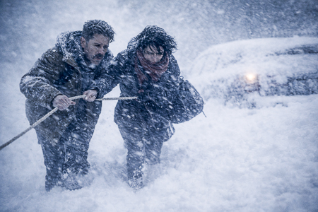
De pronto, ella se detiene. Gira la cabeza. A lo lejos, a través de la
ventisca, ve en el interior a JOSÉ FIT, LA DIVA y SOLE se mueven
rítmicamente. ÁNGELA RAW se queda mirando, hipnotizada.
MACREADY
¡Ángela! ¡Sigue!
El grito la saca del trance.
ANGELA RAW
(Gritando)
¡Voy!
Sigue arrastrándose, clavando los codos en la nieve. El viento la empuja
hacia atrás, pero ella avanza.
MACREADY
¡No mires! ¡Concéntrate!
Dos figuras diminutas que se arrastran sobre un mar blanco infinito.
INT. CASA PIRENAICA / HABITACIÓN DE SOLE - POR LA MAÑANA
OJOAVIZOR rebusca entre los cajones de la cómoda. Junto a él, a través del
vidrio empañado de la ventana, en el exterior blanco las siluetas
diminutas de MACREADY y ANGELA RAW, avanzan torpemente. OJOAVIZOR pega la
frente al cristal, intentando distinguir. Su respiración empaña otra vez
el cristal.
EXT. CASA PIRENAICA / COCHE - POR LA MAÑANA
La ventisca arrecia. ANGELA RAW y MACREADY avanzan con esfuerzo hasta los
vehículos semienterrados en nieve. La cuerda que los une se arrastra entre
ellos como una vena roja.
MACREADY raspa el parabrisas con la manga. Juntos despejan parte de la
puerta.
MACREADY tira del manillar. Ella intenta ayudarle, los dos empujan a la
vez, resbalando.
MACREADY
¡Está cerrada!
ÁNGELA RAW
¿Y ahora qué?
MACREADY se vuelve hacia la casa. NATE, al otro lado del cristal, sostiene
en alto las llaves del coche, colgando de un llavero rojo.
MACREADY y ANGELA RAW se miran, extenuados.
EXT/INT. CASA PIRENAICA - POR LA MAÑANA
MACREADY y ANGELA RAW se arrastran otra vez entre la ventisca. La cuerda
serpentea por la nieve, tensa.
INT. CASA / JUNTO A LA VENTANA – POR LA MAÑANA
NATE y TÍO PACO observan las sombras acercarse.
EXT. CASA PIRENAICA - POR LA MAÑANA
MACREADY y ANGELA llegan al ventanal cubiertos de nieve. Golpean el
cristal con los guantes.
INT. CASA / JUNTO A LA VENTANA – POR LA MAÑANA
NATE, sin soltar la cámara, les tiende las llaves. MACREADY se las arranca
de la mano.
TÍO PACO abre la ventana de nuevo. El viento invade la casa. ANGELA y
MACREADY vuelven a salir. TÍO PACO, tiritando, se apoya en el marco y
cierra.
EXT. CASA PIRENAICA / COCHE - POR LA MAÑANA
MACREADY introduce la llave en la cerradura del coche. Gira. Abre la
puerta. Suben al coche. Cierran la puerta.
INT. CASA PIRENAICA / HABITACIÓN DE LA DIVA - POR LA MAÑANA
Desde la ventana se ve a MACREADY y ANGELA RAW entrando en el coche. Sus
siluetas se pierden tras el parabrisas empañado.
OJOAVIZOR entra con sigilo. Su linterna ilumina rincones, objetos
dispersos, ropa en una silla. Se detiene. Una puerta entreabierta: el
baño. Empuja con un dedo.
Dentro: luz blanca, fría. Sobre el lavamanos: un cepillo de dientes,
perfume… y unas bragas claras, húmedas, dobladas en el borde.
Se queda mirándolas, sin expresión. Da un paso atrás, pero se detiene.
Piensa. Vuelve lentamente sobre sus pasos. Se queda en el umbral,
indeciso. Mira las bragas, luego su propio reflejo en el espejo
OJOAVIZOR
Todo sea por pagar el alquiler…
Saca una bolsa de plástico con cierre zip, arrugada. La sacude, la abre,
la coloca con precisión y mete las bragas en la bolsa. Sella el cierre con
un sonido leve: clic. Mira de nuevo el espejo. Su expresión mezcla
vergüenza y satisfacción profesional.
OJOAVIZOR
Directo a “Wallapop”.
INT. CASA PIRENAICA / SALÓN - POR LA MAÑANA
JOSÉ FIT aplaude satisfecho. SOLE está desmayada con la lengua fuera. LA
DIVA se seca el sudor de la frente con una toalla.
JOSÉ FIT
Buen entreno, chicas. Sois fuego.
SOLE
Sí… todo por la fama.
LA DIVA
Ahora un baño calentito y a dormir como reinas.
Silencio. SOLE la mira.
SOLE
¿Hay agua caliente?
LA DIVA
¡No…! No puedo vivir así.
JOSÉ FIT
El agua fría activa la circulación. Va bien para la piel.
LA DIVA
¡Yo quiero espuma, no hipotermia!
SOLE
Siempre puedes pasarte unas toallitas, como en la Edad Media.
LA DIVA
Algo se me ocurrirá.
Se levanta con dramatismo y se marcha en dirección a las habitaciones.
INT. CASA PIRENAICA / PASILLO - POR LA MAÑANA
LA DIVA avanza con paso firme, envuelta en su bata de entrenamiento, el
cabello recogido. OJOAVIZOR aparece desde el otro extremo, caminando con
su linterna encendida y una bolsa de plástico en la mano. Se detienen al
encontrarse a mitad de pasillo. Las miradas se cruzan. Ella arquea una
ceja, pasa junto a él. Abre la puerta de su habitación y entra. OJOAVIZOR
se queda quieto, mirando el pomo un instante más.
Después mira a ambos lados del pasillo, asegurándose de estar solo.
Entonces da media vuelta y entra en otra habitación, cerrando la puerta
con cuidado.
INT. COCHE - POR LA MAÑANA
Ambos jadean, riéndose con nervios. ANGELA RAW se quita los guantes y se
frota las manos. El vaho empaña los cristales.
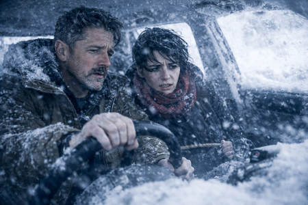
Durante unos segundos solo se escucha el sonido de su respiración y el
viento golpeando el techo.
MACREADY
(Jadeando)
Vale… tú el encendedor, yo la radio. Equipo diva.
ANGELA RAW
Hecho.
ÁNGELA RAW coge el encendedor del coche, pero es un pintalabios.
ANGELA RAW
¿Y el encendedor?
MACREADY mira a su alrededor, confundido. Se encoge de hombros.
MACREADY
Supongo que ya nadie fuma… qué mundo tan aburrido.
ANGELA RAW levantando el trozo de plástico.
ANGELA RAW
¿Y la radio?
MACREADY señala el salpicadero, una gran pantalla, una consola llena de
botones táctiles, y luces apagadas.
MACREADY
Antes había una ruedecita y dos botones… y sonaba música. Ahora son como
naves espaciales, incapaces de volar.
El silencio vuelve.
INT. CASA PIRENAICA / HABITACIÓN DE MACREADY - POR LA MAÑANA
OJOAVIZOR rebusca metódicamente en los cajones de un escritorio. Cierra un
cajón. Abre otro. Nada. Observa un borde de cartulina asomar entre dos
carpetas. Tira de ella con cuidado. La coloca sobre la mesa y la mira un
instante.
OJOAVIZOR
(Susurrando)
Vamos, nena... dame algo.
Abre la carpeta. Dentro: hojas impresas, notas manuscritas, una foto
doblada. Empieza a hojear rápido. Levanta una hoja ante la luz de la
lámpara, como si comprobar la autenticidad.
OJOAVIZOR
(Maravillado)
Oh, mamá...
INT. CASA PIRENAICA / COCHE - POR LA MAÑANA
MACREADY gira la llave una y otra vez. Nada. Ni un ruido del motor. Solo
el clic seco del arranque muerto.
ANGELA RAW
¿Ya está?
MACREADY
(Obstinado)
Sí.
Hace otro intento.
MACREADY
Bueno… no. Pero sí. Debe haber hielo en los contactos... o el
combustible... o algo.
Vuelve a intentarlo. El sonido se apaga en un gemido. Silencio.
ANGELA RAW
Ni encendedor, ni radio, ni coche. Ni siquiera un puto pitido.
MACREADY apoya la cabeza contra el volante. ANGELA RAW suspira. Apoya la
cabeza en el respaldo y cierra los ojos. No dicen nada durante unos
segundos. Luego él la mira. La observa un instante, como si esperara una
reacción.
MACREADY
Podría ser peor, cariño. Siempre puede ser peor.
ANGELA RAW
¿Ah, sí?
MACREADY
No lo veas así. A veces grabas horas, días… y nada sirve. Pero luego, de
entre todo ese desastre, sale algo. Así se construye el éxito.
ANGELA RAW lo mira, incrédula. Luego gira la cabeza hacia la ventanilla,
el rostro sin expresión.
ANGELA RAW
Lo tuyo no es motivar. Es negar la realidad.
Los dos se quedan mirando hacia adelante, en silencio.
INT. CASA PIRENAICA / SALÓN - POR LA MAÑANA
El viento golpea los ventanales. TÍO PACO y NATE se asoman a la ventana,
entre la escarcha. Fuera, el coche es apenas una silueta blanca. Nada se
mueve.
NATE
¿Cuánto llevan?
TÍO PACO
No lo sé… pero demasiado para que sea buena señal.
NATE
Deberían haber vuelto hace ya.
Silencio. Ambos miran sin saber qué hacer. SOLE se une a ellos.
SOLE
Si se empañan las ventanas del coche, avisad.
TÍO PACO
No tiene gracia… y desde luego no es tranquilizador.
NATE
Quizá están descansando.
SOLE
No te pongas celoso.
JOSÉ FIT aparece con una toalla al hombro. Sin camiseta.
JOSÉ FIT
¿Pasa algo?
NATE
Nada. Todavía no han vuelto.
JOSÉ FIT
Ya volverán. Yo me voy a duchar.
SOLE
¿Y el agua caliente?
JOSÉ FIT
Fría. El cuerpo…
SOLE
Ya… activa la circulación.
JOSÉ FIT se marcha. TÍO PACO, NATE y SOLE siguen mirando por la ventana.
SOLE
A lo mejor… ya no hay nadie que empañe los cristales.
TÍO PACO y NATE miran a SOLE.
INT. CASA PIRENAICA / PASILLO - POR LA MAÑANA
OJOAVIZOR sale de la habitación de MACREADY. Lleva una carpeta azul bajo
el brazo. De pronto, un sonido. Pasos. Sin pensarlo, se mete la carpeta
bajo el jersey, pegada al cuerpo. Ajusta la cremallera.
Aparece JOSÉ FIT, toalla al cuello, sin camiseta. Camina rumbo a su
habitación.
Al cruzarse, se miran. Silencio.
JOSÉ FIT
(Sin detenerse)
¿Buscas algo?
OJOAVIZOR
Solo revisaba. Por si encontraba algo útil.
JOSÉ FIT
Así qué, ¿registrando habitaciones, eh?
OJOAVIZOR
Tú dedica tus neuronas a las flexiones. Déjame a mí lo complicado.
JOSÉ FIT se planta frente a él.
JOSÉ FIT
Mira, colega.
Sus miradas se clavan. OJOAVIZOR aguanta. JOSÉ FIT da un paso más cerca,
lo suficiente para invadir su espacio.
JOSÉ FIT
Voy a entrar en mi habitación. Y como vea que has estado husmeando en mis
cosas…
OJOAVIZOR
Tranquilo, “Rambo”. Eso suena a amenaza. Y tú y yo jugamos en el mismo
equipo.
JOSÉ FIT le sostiene la mirada un segundo, luego sigue su camino.
JOSÉ FIT
Capullo.
Abre la puerta de su cuarto y entra.
INT. CASA PIRENAICA / HABITACIÓN DE LA DIVA - POR LA MAÑANA
Frente al espejo, LA DIVA, envuelta en una bata de satén, abre el grifo y
moja una toalla. el maquillaje corrido, el rímel bajo los ojos, los labios
sin brillo.
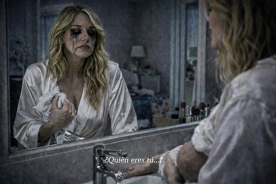
Cierra los ojos, pasa la toalla por su cuerpo. El maquillaje se le escurre
por las mejillas como tinta derretida. Mira su reflejo.
LA DIVA
(Susurrando)
¿Quién eres tú…?
Apoya las dos manos sobre el lavabo, respirando hondo. Apaga el grifo.
Respira otra vez. Lenta. Apaga el grifo.
INT. CASA PIRENAICA / COCHE - POR LA MAÑANA
ANGELA RAW frota sus manos, intentando recuperar calor. Mira su reflejo
borroso en el cristal.
ANGELA RAW
¿Sabes qué es lo peor? Lo peor no es esto. Lo peor es… mi vida real.
MACREADY
¿Cómo dices?
ANGELA RAW
Que mí día a día me da más miedo que esta ventisca. La vida que enseño… ya
no existe. Ya no puedo seguir el ritmo. Pero la gente quiere más y más… y
tengo que subir algo... Así que… uso IA. Mis fotos, mis viajes, mis cenas.
Hay una versión mía por ahí que vive mejor que yo.
MACREADY se ríe por lo bajo.
MACREADY
Bienvenida al club. Sino alimentas a la bestia… desapareces.
ANGELA RAW
Exacto. Y sino te ven, no existes. Y el algoritmo se olvida de ti.
MACREADY la observa atentamente.
MACREADY
El amor del público es una droga. Te sube rápido. Te destroza más rápido
aún. Y cuando te das cuenta tu vida es solo una ilusión. Un teatro
marionetas para entretener a un mundo que se cansa de ti.
ANGELA RAW lo mira fascinada.
ANGELA RAW
Sabes. A veces pienso en abrir un “OnlyFans”. Aunque no sé si por
dinero... o porque echo de menos que alguien me mire de verdad.
ANGELA RAW se encoge en su asiento. Mira por la ventana. Vuelve su mirada
a MACREADY. Se miran. Ella se le acerca y se inclina hacia él.
ANGELA RAW
¿Qué es eso?
ANGELA RAW le señala el pecho.
ANGELA RAW
¿Estás grabando?
MACREADY
Claro. Grabo todo.
ANGELA RAW
Si vuelves a grabarme sin avisar… te juro que te apago yo mismo la puta
cámara. Vámonos de una vez.
MACREADY
Oye bonita… mantengamos la calma.
Salen del coche. El viento los golpea con violencia.
INT. CASA PIRENAICA / HABITACIÓN DE OJOAVIZOR - POR LA MAÑANA
OJOAVIZOR está sentado en una butaca. En sus manos, la carpeta azul. En el
exterior, a través de la ventana, MACREADY y ANGELA RAW regresan.
OJOAVIZOR se gira y los ve.
OJOAVIZOR
Los héroes de hielo…
Vuelve la vista al dossier. Sus ojos brillan de excitación.
EXT. CASA PIRENAICA / COCHE - POR LA MAÑANA
MACREADY y ANGELA RAW avanzan hacia la casa, la ventisca los empuja. De
pronto, ANGELA RAW se detiene. Se gira hacia el coche. El viento la
golpea.
MACREADY
(Gritando)
¡No pares ahora!
ANGELA RAW
(Gritando)
¡El maletero!
MACREADY la mira interrogante.
Llegan al maletero, lo abren de golpe. ¡CLANG! Una nube de nieve le cae
encima de ellos. Abren una tapa, descubren la batería del coche. MACREADY
la coge y cierran el maletero con un golpe seco. ¡CLANG!
INT. CASA PIRENAICA / COCINA - MEDIODÍA
MACREADY deja caer la batería del coche sobre la mesa con un golpe que
resuena por toda la estancia.
MACREADY
¡”Voila”! Nuestra central eléctrica.
El grupo se reúne alrededor de la mesa. TÍO PACO se acerca curioso a la
batería.
MACREADY
(A TÍO PACO)
Tú sabrás qué hacer con esto.
NATE da un par de palmadas en la espalda a MACREADY, sin decir nada. TÍO
PACO asiente, casi emocionado.
TÍO PACO
Si queda carga… Puede servir. Necesito cables, algo que conduzca.
Todos aplauden a MACREADY. TÍO PACO se marcha decidido, justo cuando
OJOAVIZOR entra. Trae la carpeta apretada contra el pecho, la mirada
encendida. Se cruzan sin hablar. TÍO PACO sigue su camino. OJOAVIZOR se
detiene en el umbral.
En la puerta, ANGELA RAW los observa. El cabello aún húmedo, los ojos
cansados. Su respiración sigue entrecortada por el frío. Nadie la mira.
JOSÉ FIT se mantiene atrás, los brazos cruzados.
JOSÉ FIT
No hace falta todo este teatro. Solo hay que esperar que pase la tormenta.
LA DIVA
Pues mientras… Por lo menos podremos cargar móviles, cariño.
OJOAVIZOR avanza hacia la mesa y deja caer la carpeta azul. El golpe corta
la conversación. Las hojas vuelan, se esparcen.
Todos miran, confundidos. En los papeles hay fotos de ellos mismos,
informes, copias de correos, listas de seguidores, deudas, contratos.
SOLE
¿Pero qué coño es esto?
LA DIVA
Esa foto… es de mi boda.
TÍO PACO
Esto es mi dirección. ¿Cómo has conseguido esto?
OJOAVIZOR señala a MACREADY.
OJOAVIZOR
Estaban en su habitación. Tiene información sobre todos nosotros.
El grupo entero se aleja de MACREADY. ANGELA RAW se une también al corro
de la mesa y coge algunos papeles.
ANGELA RAW
¿Tenías carpetas con nuestras vidas?
LA DIVA
Detalles personales.
SOLE
Y lo que debemos.
Las miradas se cruzan.
MACREADY
Mientras yo me jugaba la vida ahí fuera… tú hurgabas en mis cosas. Rata
carroñera.
ANGELA RAW
Yo también estaba ahí fuera.
Nadie la mira.
OJOAVIZOR
Porque tú entraste antes en las nuestras. Nos grabas, nos observas.
¿Verdad, Nate?
Todos giran hacia NATE. MACREADY lo observa y le hace un gesto de cabeza
indicando que no hable. NATE baja la mirada.
MACREADY
(Decepcionado)
¿Tú también, Bruto?
De pronto, MACREADY se lanza hacia la mesa. Intenta recoger los papeles.
Pero los demás también los agarran, desesperados por ver lo suyo. Las
manos se cruzan, se empujan, los folios se rasgan.
SOLE
¡Dame ese, es mío!
LA DIVA
¡Quiero ver qué pone de mí!
De pronto, la puerta se abre con estrépito. TÍO PACO aparece, cargando con
una torre de aparatos: una radio vieja, cables, una plancha, una tostadora
rota y una lámpara sin pantalla.
TÍO PACO
¿Puedo dejar esto aquí?
Nadie responde. Siguen tirando de los papeles.
TÍO PACO
Bueno… con permiso.
TÍO PACO aparta con cuidado los papeles de la mesa y coloca sus aparatos
sobre esta. Algunos papeles caen al suelo.
SOLE
¡No los toques, que son míos!
TÍO PACO
Tranquila, hija, no tengo interés en tu biografía.
TÍO PACO conecta un cable a otro, prueba un interruptor, se concentra.
ANGELA RAW
Y ahora lo entiendo. Todo formaba parte de tu plan, ¿verdad? Querías
material.
Se cruzan sus miradas desafiándose. El grupo se tensa. OJOAVIZOR sonríe.
MACREADY
(Al grupo)
Todos sabíais a lo que veníais. Yo solo encendí las luces.
TÍO PACO provoca un chasquido eléctrico. Una chispa azul salta entre dos
cables y la luz roja de una regleta se enciende. Todos miran.
TÍO PACO
¡Funciona! ¡Tenemos corriente!
Una explosión de alegría colectiva. SOLE grita. NATE da saltos. LA DIVA
aplaude.
NATE
¡Podemos montar la radio!
SOLE
¡Y cargar los móviles!
Todos salen corriendo. Solo quedan MACREADY y ANGELA RAW, sosteniendo la
mirada. Entre ellos, la batería parpadea.
INT. CASA PIRENAICA / ESCALERAS - MEDIODÍA
Suben corriendo por las escaleras.
SOLE
¡Déjame pasar!
LA DIVA
¡Ni loca! ¡Yo lo vi primero!
INT. CASA PIRENAICA / COCINA - MEDIODÍA
ANGELA RAW se mantiene frente a MACREADY, el rostro tenso.
El grupo interrumpe, regresan todos con los cargadores, arrastrando
cables, cargadores y aparatos.
SOLE
¡Yo primero, que tengo solo un 2%!
JOSÉ FIT
Mi móvil tiene prioridad, grabo con él.
LA DIVA
¡Yo vivo de mi imagen!
Se apartan las manos. Luchan para ver quién conecta primero.
TÍO PACO
¡Cuidado! ¡No podéis conectar todo a la vez! ¡Podéis fundirla!
Nadie lo escucha. Los cables se enredan sobre la mesa,
SOLE
¡Solo necesito cinco minutos!
LA DIVA
(Aferrando la regleta)
¡Suéltala! ¡Es mía!
La regleta se tambalea, la batería tiembla sobre la mesa. El cable
chispea.
TÍO PACO
¡Si sobrecargamos esto, adiós a la batería!
NATE
¡Hay que priorizar la radio!
LA DIVA desenrolla el cable de un secador de pelo.
LA DIVA
Prioriza lo que quieras, pero yo tengo el pelo empapado.
TÍO PACO
(Gritando)
¡Por Dios, parad! ¡NO enchufes eso!
Conecta un secador de pelo a la regleta. Las luces parpadean, la batería
vibra.
MACREADY
¡Desconecta eso!
LA DIVA
¡Un segundo, que solo quiero—!
El secador estalla con un chasquido. LA DIVA lo suelta sobre la mesa. TÍO
PACO intenta agarrar el secador para que no caiga sobre la batería. Una
chispa azul atraviesa el aire y TÍO PACO grita, sacudido por una descarga.
TÍO PACO
(Balbucea)
Esto… esto no estaba bien calculado…
Su cuerpo se arquea y TÍO PACO cae al suelo, convulsionando. Los ojos
entreabiertos, el cuerpo rígido.
La regleta se apaga. Silencio. Todos se quedan congelados.
LA DIVA retrocede, pálida. Sus compañeros la miran.
LA DIVA
¡Tenía el pelo mojado! ¿Sabes lo que cuesta este “Make up” con humedad?
INT. CASA PIRENAICA / SALÓN - POR LA TARDE
El salón está en penumbra. La luz gris entra solo por las ventanas. TÍO
PACO yace en el sofá, inmóvil, la piel pálida. MACREADY se inclina sobre
él y le da un par de cachetadas.
MACREADY
Nada… está frito.
LA DIVA se lleva las manos a la cabeza, el rímel corrido.
LA DIVA
Dios mío, esto es fuertísimo. Me van a cancelar viva.
SOLE
No… esto es una locura. Tenemos que llamar a emergencias. ¡Ya!
ANGELA RAW
¿De verdad nadie tiene cobertura?
NATE
Ni señal. Ni “wifi”. Nada.
SOLE
Genial. Esto es muy España.
NATE
¡Es Andorra!
JOSÉ FIT
El pueblo está a cuatro kilómetros. Podríamos ir andando.
MACREADY
Está anocheciendo. Nos perderíamos en media hora.
SOLE rompe a llorar.
SOLE
De verdad, no puedo con mi vida. Deberíamos haber priorizado la maldita
radio.
OJOAVIZOR
No hace falta radio. Esto no es casualidad.
Todos lo miran.
OJOAVIZOR
No quiero afirmar nada, pero… los hechos hablan por sí solos. Ojo a este
detalle. Los párpados los tiene demasiado cerrados.
(Señala a MACREADY)
Y tú ya lo sabías.
(Señala a LA DIVA)
Y tú eras cómplice.
LA DIVA
¿Perdón? ¿Tú sabes quién soy yo?
OJOAVIZOR
Tú enchufaste el secador a propósito. Para montar una escena. Crear caos.
Subir la audiencia.
LA DIVA arranca a llorar.
LA DIVA
¡Yo solo tenía el pelo mojado! ¿De verdad crees que esto me favorece?
JOSÉ FIT
¡Qué audiencia! Si nadie estaba grabando.
OJOAVIZOR
¿Tú como sabes que nadie nos está grabando?
MACREADY
¡BASTA!
Se arrodilla junto a TÍO PACO y le da dos cachetadas más.
MACREADY
¿Finges, eh?
(A OJOAVIZOR)
¿Quieres probarlo tú?
OJOAVIZOR se remanga dispuesto.
OJOAVIZOR
Encantado. He visto faquires en la India soportar más que esto.
OJOAVIZOR da un paso adelante, pero se detiene. ANGELA RAW se ha acercado
al sofá. Se arrodilla, pone la oreja sobre el pecho de TÍO PACO. Silencio.
ANGELA RAW
Tiene pulso. Débil, pero está vivo.
Todos contienen la respiración. NATE graba el momento. MACREADY dobla su
chaqueta y la coloca bajo la cabeza de TÍO PACO, teatralmente. Mira a su
alrededor con solemnidad.
MACREADY
Ahora nuestra prioridad es salvarlo. Esto no va de espectáculo. Esto va de
humanidad.
Hace una pausa, luego vuelve la cabeza hacia NATE.
MACREADY
¿Lo has grabado?
NATE
Sí. Fabuloso.
MACREADY
¡Grande, Nate!
EXT. CASA PIRENAICA - ANOCHECER
El sol, débil y anaranjado, se hunde tras las montañas.
INT. CASA PIRENAICA / COCINA - ANOCHECER
La luz ámbar del atardecer filtra a través de las ventanas. El polvo en
suspensión flota en el aire.
Comen en silencio. Solo se oyen cucharas golpeando la loza, respiraciones
frías y el viento afuera. Los rostros están tensos, cansados. Escuchamos
los pensamientos de cada uno.
MACREADY (OFF)
Qué cuadro. ¡Qué cuadro tan feo! Por favor… Esto… esto es patético.
Después de todo el planazo que monté… y aquí estoy, cenando sopa congelada
con caras largas. Como palme los cincuenta mil, adiós patrocinadores,
adiós renovación, adiós todo. Como alguien me joda…
MACREADY levanta la mirada. Sus ojos se clavan sobre ANGELA RAW.
ANGELA RAW (OFF)
Estaba ahí afuera helándome el culo, arrastrándome por la nieve. ¿Y para
qué? Entro por la puerta y nadie me mira. Ni una puta mirada. Estoy
cansada de “poner buena energía” mientras todo se derrumba.
OJOAVIZOR mira al grupo como analizando un crimen.
OJOAVIZOR (OFF)
Míralos. Muertos vivientes. Esto es lo que son. Realmente inquietante.
Aquí hay algo que no encaja… Soy el único despierto. El que ha visto la
verdad.
OJOAVIZOR mira con desprecio a JOSÉ FIT, que está devorando su “tupper”.
OJOAVIZOR (OFF)
Y encima el mazado ese poniéndose las botas. Ya verás cuando falte comida…
a ver quién ríe. Ahí va a empezar la verdadera película.
JOSÉ FIT le devuelve la mirada mientras mastica groseramente.
JOSÉ FIT (OFF)
Madre mía… Qué blandengues, por dios. Un apagón y ya están llorando. Aquí
el único preparado soy yo. Disciplina: eso es lo que falta.
JOSÉ FIT levanta la vista y mira a LA DIVA. Ella le sonríe.
JOSÉ FIT (OFF)
…y cómo está la cabrona. Si quisiera… en diez minutos la dejo sin aire.
Seguro que todavía da el pecho.
LA DIVA (OFF)
OMG… cómo me mira, ay por favor…. Ojalá vuelva ya la cobertura. ¡Mis
métricas! Dios, necesito volver. Y mi niña… espero que esté dormidita. Aunque… Bueno… dormir sola tampoco
es el fin del mundo.
SOLE revuelve la sopa, distraída.
SOLE (OFF)
A ver… ¿ni un mensaje de Salva?
Ni mensaje. Ni llamada. Nada. Qué fuerte me parece. Qué asco de tío. Y qué
asco de vida. Mañana mismo Mañana mismo me saco esto del cuerpo. Como sea.
SOLE cruza la mirada con MACREADY y luego mira a NATE.
SOLE (OFF)
Y ese… Sabe Dios por qué prefiere grabar a ese marica antes que a mí.
Mañana… mañana me mirará.
SOLE y NATE se miran.
NATE (OFF)
Menuda mierda estamos grabando. Cero ritmo, cero estética, cero narrativa.
No sé qué pretende sacar de este circo… Y Sole… Sole está muy bien. Casi una MILF.
INT. CASA PIRENAICA / PASILLO HABITACIONES - NOCHE
Oscuridad. Pasos suaves sobre la madera. LA DIVA sale de su habitación. Va
a llamar a la puerta de JOSÉ FIT cuando, al fondo del pasillo, aparece
NATE, cargando la misma caja de madera que la noche anterior. Se cruzan en
mitad del pasillo. LA DIVA sonríe con inocencia forzada.
LA DIVA
¿Y… qué llevas ahí? ¿Contenido “Premium”?
NATE
No es asunto tuyo. Y… en las pelis de miedo, los que se escapan a follar…
no suelen llegar al final.
Ella lo mira cómo si no hubiera escuchado bien.
LA DIVA
¡Yo no soy “de esas”!
NATE sigue caminando hacia la habitación de MACREADY. LA DIVA se queda un
segundo mirando cómo se aleja. Luego toca la puerta de JOSÉ FIT con los
nudillos, suavemente, dos veces.
INT. CASA PIRENAICA / HABITACIÓN MACREADY - NOCHE
NATE entra en la habitación con la caja entre las manos y la deja sobre la
cómoda.
MACREADY está sentado en el borde de la cama, envuelto en una manta
brillante y masajeándose el cuello. Sin mirarlo.
MACREADY
Calienta un poco las manos, ¿sí?
NATE suspira, frotándose las manos. MACREADY lo mira lascivo.
INT. CASA PIRENAICA / HABITACIÓN JOSÉ FIT - NOCHE
JOSÉ FIT está sentado en la cama, sin camiseta y aplicándose una crema en
el cuerpo. LA DIVA está sentada en una silla. No le quita el ojo de encima
mientras habla.
LA DIVA
No puedo más, José. Me han señalado… Me han hecho sentir como si fuera una
delincuente. ¡Como si yo hubiera querido que pasara!
JOSÉ FIT
Aquí nadie es inocente… Ese cretino… Sabe demasiado de todos. Esos
papeles… Podría hundirnos si quisiera.
Se hace un silencio.
LA DIVA
Yo tampoco confió en él. Hay cosas qué… no quiero que se sepan.
Suelta un suspiro largo, dramático. JOSÉ FIT la mira fijamente.
LA DIVA
¿Sabes? He sido madre… no porque quisiera, sino porque mi SMM decía que un
bebé daba “engagement”. Te humaniza, te hace real… ¿sabes lo fuerte que es
eso?
Una lágrima le cae por la mejilla sin que ella la note.
LA DIVA
La quiero. Pero no puedo con esta vida. No hay silencio. No hay tiempo. No
hay… yo.
JOSÉ FIT deja la crema, coge una toalla y se acerca a ella mientras se
seca.
LA DIVA
Y… ¿que tiene contra ti?
JOSÉ FIT la mira serio. Abre un neceser y saca una jeringuilla preparada.
LA DIVA abre los ojos y mira sorprendida.
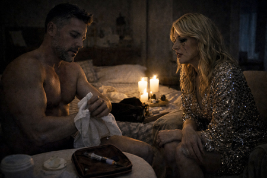
LA DIVA
¿Eso es…?
JOSÉ FIT
Solo son dos ciclos al año. Lo tengo súper controlado. Pero… si alguien se
entera… me hará perder a todos mis seguidores. ¿Podrías ayudarme? Con tan
poca luz… No sé si atinaré yo solo.
Ella lo mira. Mira la aguja. Mira su espalda ancha.
LA DIVA
Nunca había hecho algo así. ¿Dónde te la clavo?
JOSÉ FIT se pone de pie, se gira a la vez que se baja los pantalones
mostrándole el culo.
JOSÉ FIT
(Sonriendo)
Aquí. En el glúteo.
Ella traga saliva. Le tiembla ligeramente la mano mientras coge la aguja.
La clava en la parte superior de la nalga. Cuando termina, él vuelve a
sentarse junto a ella. Se miran de cerca. Muy cerca.
LA DIVA
(Temblorosa)
José… Yo nunca…
JOSÉ FIT sonríe con calma.
JOSÉ FIT
No pasa nada. Lo entiendo. Entre el estrés, la niña, la cuarentena… Puedes
confiar en mí.
Ella asiente. JOSÉ FIT acerca su mano a la suya. La coge y lleva la mano
de LA DIVA a su pecho. Ella lo toca fascinada.
JOSÉ FIT
Bueno. No cuentes mi secreto a nadie.
Ella sonríe.
LA DIVA
¿De verdad? No voy a subirlo. ¿Por quién me tomas? Puedo guardar un
secreto… ¿Y tú?
JOSÉ FIT
Yo puedo guardar uno. Y dos… y los que haga falta.
JOSÉ FIT se acerca más. Se besan. Se funden en un abrazo. Y se tumban
sobre la cama retozando.
FUNDIDO A NEGRO
EXT. CASA PIRENAICA – AMANECER
La tormenta ha parado, pero la casa sigue atrapada bajo un metro de nieve.
El día amanece gris.
Sobre la imagen aparece el cartel:
Temperatura Exterior: -18º
Temperatura Interior: 12º
INT. CASA PIRENAICA - AMANECER
Por las ventanas solo se ve blanco. OJOAVIZOR, envuelto en una manta, está
parado frente a una ventana, tiene la mirada perdida. Su silueta es un
bulto oscuro contra la claridad.
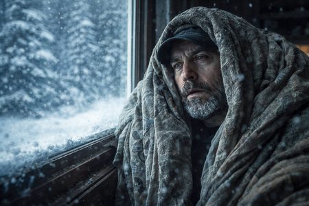
OJOAVIZOR NIÑO (OFF)
Mamá… mira… ¡mira cuánta nieve! ¿Puedo correr? ¿Puedo? Me dijiste que
podría usar mi trineo nuevo cuando nevara de verdad… Mamá… mírame, Me
lanzo, ¿vale? Solo un poquito… Mamá… no me sueltes. No… no me sueltes otra
vez.
NATE, cubierto con una manta, comprueba los interruptores de la luz,
siguen sin electricidad.
ANGELA RAW coloca otra manta sobre TÍO PACO tiembla suavemente, está
delirando sin poder responder. Ella lleva un abrigo puesto. TÍO PACO mueve
la cabeza hacia un lado, murmura algo ininteligible.
Al otro extremo de la habitación, MACREADY la observa en la distancia.
Cruzan las miradas sin decirse nada. ANGELA RAW baja la mirada, vuelve a
acomodar la manta sobre TÍO PACO.
INT. CASA PIRENAICA / COCINA - POR LA MAÑANA
Todos (MACREADY, ANGELA RAW, JOSÉ FIT, LA DIVA, SOLE, NATE y OJOAVIZOR)
van ataviados con abrigos y cubiertos con mantas.
Sobre la isla de la cocina colocan lo poco que queda de comida: latas,
barritas energéticas, un paquete de galletas abierto, una bolsa con dos
patatas…
SOLE
Esto… esto no da ni para una semana.
LA DIVA
Ni para dos días.
OJOAVIZOR clava la mirada en los “tuppers” de JOSÉ FIT.
OJOAVIZOR
Bueno, pues podemos compartir los “tuppers”… del grandullón.
JOSÉ FIT gira la cabeza bruscamente.
JOSÉ FIT
Ni de coña. Eso es mío.
OJOAVIZOR
En situaciones extremas hay que pensar en el bien común. El tríceps puede
esperar.
JOSÉ FIT
Yo necesito más calorías que vosotros. Y esto no va a durar. No
dramaticéis. Estamos en Andorra, no en el Everest.
OJOAVIZOR
¡Exacto! Porque nada de esto es real. El encierro, las cámaras escondida…
Seguro que hay un equipo en un sótano mirándonos ahora mismo.
MACREADY
Estás loco. Baja al sótano y lo compruebas. Y, si quieres, te quedas allí.
OJOAVIZOR
Nos has metido aquí para grabarnos como ratas.
SOLE
Yo también empiezo a pensar que venir fue una cagada.
LA DIVA
Totalmente.
MACREADY levanta las manos como un predicador cansado.
MACREADY
Podéis ver esto como un desastre o como una prueba más. Todos aquí habéis
tenido vídeos que no funcionaron, o seguidores que se fueron. Y aun así
seguisteis. Le disteis la vuelta al marcador. Eso es lo que hacemos:
convertir mierda en contenido.
OJOAVIZOR se adelanta.
OJOAVIZOR
A mí los “followers” me sudan los cojones. Yo quiero contar la verdad. Y
sino me dejáis hablar de las ciudades subterráneas donde viven las élites…
(Pausa)
…puedes meterte tu show por el culo.
ANGELA RAW
A veces hay que dejar los seguidores a un lado y ser humanos. Tenemos
alguien en la otra habitación que necesita ayuda.
SOLE
Exacto. Hay que pedir ayuda ya.
LA DIVA
Si Paco se muere aquí, nos van a destrozar en redes.
JOSÉ FIT
Lo mínimo es intentar salvarle.
MACREADY mira alrededor.
MACREADY
Bien. Pediremos ayuda.
Se hace un silencio espeso. Miradas cruzadas.
MACREADY
Alguien tiene que salir ahí fuera y buscarla.
Silencio. Nadie se mueve.
MACREADY
Y ese alguien… soy yo.
ANGELA RAW
¿Tú?
MACREADY
Soy la anfitriona. Además, son solo cuatro kilómetros. Podré llegar.
SOLE
¿Con esta ventisca?
MACREADY
Si no lo hago yo, ¿quién?
Todos asienten.
OJOAVIZOR
Todo esto es parte del montaje.
El frío no es real. La ventisca es solo un ventilador gigante.
Todos se giran hacia OJOAVIZOR.
INT. CASA PIRENAICA / ENTRADA - POR LA MAÑANA
La puerta principal está cubierta por una capa gruesa de hielo por dentro.
El viento se escucha golpeando desde fuera.
MACREADY se abrocha bien el abrigo. NATE coge un rollo de cable de cien
metros y lo prepara. Se acerca a MACREADY y le anuda el extremo del cable
a la cintura. Ambos se miran.
NATE
Te atamos para que no te pierdas en la salida. Cuando encuentres el
camino… sueltas.
MACREADY asiente.
MACREADY
Tranquilo. No te libras tan fácil de mí.
Le guiña un ojo. NATE traga saliva.
NATE
¿Quién sujeta?
JOSÉ FIT se adelanta y la coge.
JOSÉ FIT
Yo. ¿Estás seguro de esto? Caminar en nieve profunda no es broma.
ANGELA RAW
El viento te desorienta. Un paso mal dado… y no sabes volver.
SOLE
Igual… deberíamos pensarlo dos veces.
MACREADY
Algo me dice que tengo que hacerlo. Por vosotros. Por este equipo.
MACREADY mira a NATE, que sostiene la cámara.
MACREADY
¿Lo has grabado?
NATE levanta el pulgar. MACREADY sonríe. Se gira hacia la puerta. Los
demás se apartan.
MACREADY gira el pomo. Respira hondo, como si fuera un astronauta por
salir al vacío. Abre la puerta. Una ráfaga brutal de viento y nieve invade
el recibidor. MACREADY sale.
JOSÉ FIT va soltando cable. MACREADY avanza. A cada paso su figura se
desvanece en la ventisca. Y de pronto… el cable se destensa y cae al
suelo.
JOSÉ FIT
¡Se ha soltado! ¡Se ha soltado!
NATE
¡Recoge cable!
Las manos de JOSÉ FIT recogen el cable con velocidad frenética… hasta
quedarse con un cabo suelto. Todos miran el extremo vacío.
SOLE
No… no puede haber llegado tan lejos.
LA DIVA se tapa la boca.
LA DIVA
Dios mío…
ANGELA RAW
¿Está vivo? ¿Está…?
OJOAVIZOR
Lo sabía. Una artimaña. Una desaparición calculada.
NATE
Cállate. No ha sido un truco.
OJOAVIZOR
Desaparecer en la nieve… ¡el tipo de historia que él contaría!
EXT. MONTAÑA NEVADA - POR LA MAÑANA
MACREADY avanza hundiéndose en la nieve hasta las rodillas.
MACREADY
(Para si)
¿Pero quién coño me manda a mí… quién? “Vente a Andorra, ventajitas
fiscales, vivirás de lujo…” ¡Que me cago en las putas montañas, hostia ya!
Resbala y cae de rodillas en la nieve. Trata de levantarse. Se arrastra
hasta un árbol al que se agarra para ayudarse.
MACREADY
¿Y ahora qué? ¿Morirme aquí como una mamarracha?
Resbala por el tronco hasta caer en la nieve, exhausto.
MACREADY
Si es que… lo sabía yo. El cementerio está lleno de valientes, ¿no? Menuda
mierda de titular: “Influencer muere en Andorra intentando ser buena
persona.” Me cago en estas montañas.
Su mano temblorosa saca el móvil del bolsillo. Un 5% de batería. Enciende
la cámara. La nieve le golpea la cara. Se graba. Su imagen aparece
temblando.
MACREADY
Si alguien encuentra esto… Que sepa que lo intenté. Que lo di todo. Por
vosotros. Por enseñaros… He sido un referente. Un faro… Un amigo
invisible…
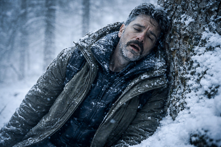
Baja el móvil abatido. Cierra los ojos resignado.
MACREADY
Invisible… invisible mis cojones.
Abre los ojos. Frunce el ceño. A lo lejos ve un resplandor naranja, débil
y una columna de humo que se eleva.
MACREADY
¿Pero qué…? Mierda…
Se limpia la cara, frotándose los ojos. Se pone de pie como puede,
apoyándose en el árbol.
MACREADY
¿En serio? ¡Me cago en la puta, si hay gente ahí!
MACREADY echa a andar. Se apresura. Torpemente. Tropezando. Con
desesperación animal.
EXT. CASA EQUIPO TÉCNICO - POR LA MAÑANA
MACREADY se acerca a la puerta y la golpea con fuerza.
MACREADY
¡Abrid coño!
Rodea la casa y mira por una ventana.
INT. CASA EQUIPO TÉCNICO - POR LA MAÑANA
En su interior, el equipo técnico está tranquilo jugando a un juego de
mesa. Las luces están encendidas. Termos de café. Sillas plegables.
Abrigos colgados.
MACREADY
¡Hijos de mil padres!
INT. CASA EQUIPO TÉCNICO - POR LA MAÑANA
Alrededor de la chimenea encendida, mantas dobladas, beben de tazas y
juegan al Catán.
Uno de ellos, RAFA, ve a MACREADY por la ventana y sonríe.
RAFA
¡Eh! ¡Es él! ¡Es él!
INT. CASA EQUIPO TÉCNICO - POR LA MAÑANA
Varios técnicos acompañan a MACREADY hasta el sofá, lo cubren con una
manta y le dan una taza humeante. A su alrededor, el equipo técnico se
acomoda a su lado.
MACREADY
He estado… a punto de morir congelada. Literalmente.
RAFA
Sí. Menuda rasca. Nosotros llevamos dos días sin salir.
MACREADY observa a su alrededor: la chimenea, las tazas de café humeante…
MACREADY
¡Habéis hecho fuego!
TÉCNICO 2
Claro. Un par de pitis y un poco de papel, bueno y…
TÉCNICO 3
Y libros. Había montones de cajas en el desván.
TÉCNICO 2 enseña el libro Anatomía del Mal de Jordi Wild.
TÉCNICO 2
Arde como el demonio.
RAFA
¿Quieres unirte a la partida?
MACREADY los mira, perplejo, confundido. Casi ofendido… Se quita la
chaqueta, dejando al descubierto su camiseta interior, y se ajusta mejor
en el sofá.
MACREADY
¿A qué jugáis?
TÉCNICO 1
¿No conoces el Catán?
MACREADY niega con la cabeza.
RAFA
Te va a flipar. Has de gestionar los recursos, construir y negociar con
los demás. Así nacen las civilizaciones.
MACREADY escucha atento. Da un sorbo a su taza, mira alrededor… mira la
estufa… mira las mantas… mira los rostros de los que lo rodean. Y
finalmente, levanta la mirada a cámara. Levanta las cejas. Encoge los
hombros. Y sonríe.
ENCADENADO A:
INT. CASA PIRENAICA / SET DE GRABACIÓN - POR LA TARDE
La sala está en penumbra. NATE, con una manta en los hombros, observa
cabizbajo el gran cartel de MACREADY. SOLE aparece en el umbral. Se acerca
despacio, también envuelta en una manta. Desde el salón, se escuchan a los
otros.
LA DIVA (OFF)
Tenemos que ir a buscarlo.
JOSÉ FIT (OFF)
¿Salir ahí fuera? ¿Estás loca?
OJOAVIZOR (OFF)
El frío no es real. Voy a salir y lo voy a demostrar.
ANGELA RAW (OFF)
¡Estás loco!
JOSÉ FIT (OFF)
¡Te matará el viento, imbécil!
LA DIVA (OFF)
Vuelve adentro, coño. No hagas esto.
OJOAVIZOR (OFF)
El frío… no es… real…
SOLE y NATE se miran.
SOLE
Seguro que está bien. Es de esos… de los que aparecen en el último segundo
para callarnos la boca.
NATE no responde. Aprieta la mandíbula.
NATE
No. La cuerda se soltó muy pronto. Y yo… lo dejé ir. Y él… él nunca se
orienta. Nunca. Ni siquiera encuentra su coche cuando aparca.
SOLE se acerca más a él y lo rodea con sus brazos mientras apoya la cabeza
en su hombro.
SOLE
No es culpa tuya. Él eligió salir. A veces la gente decide hacer tonterías
por sí misma.
SOLE levanta la cabeza y busca su mirada.
SOLE
Escucha… El show no ha terminado. ¿Vale?
NATE levanta lentamente la cabeza. Sus ojos se encuentran.
NATE
Hablas como él.
SOLE
Alguien tiene que hacerlo.
NATE mira la sonrisa congelada de MACREADY en la pantalla. Luego mira la
sonrisa desafiante de SOLE. Y sin decir nada, asiente.
SOLE
Vamos, Nate. El show sigue. Contigo… o sin él.
INT. CASA PIRENAICA / COCINA - POR LA TARDE
La cocina está helada y en penumbra. Iluminada solo por el gris que entra
de las ventanas. El grupo está alrededor de la isla. En el centro JOSÉ FIT
y OJOAVIZOR, discuten frente a frente.
OJOAVIZOR
Por culpa de egoístas como tú la humanidad se extinguirá. Primero acaparas
la comida, luego, ¿luego qué? ¿El aire! … ¡Es el ciclo de destrucción!
Siempre igual.
JOSÉ FIT
No, campeón. Eso se llama selección natural. Sobrevivimos los mejor
preparados.
Levanta su tupper como si fuera un trofeo.
JOSÉ FIT
La próxima vez… te traes tú los tuyos.
OJOAVIZOR aprieta la mandíbula. Le tiembla la cara. NATE y SOLE entran.
SOLE
A ver… Si esto se alarga, habrá que… pensar. No podemos vivir del aire. O
compartimos la comida que hay… o acabaremos… mal.
Todos la miran sorprendidos.
SOLE
¿Qué? ¿No habéis visto la Sociedad de la nieve?
LA DIVA
Allí llevaban semanas…
JOSÉ FIT
Aquí nadie ha muerto.
OJOAVIZOR
Todavía...
La puerta se abre de golpe. ANGELA RAW entra, la cara pálida, la
respiración entrecortada.
ANGELA RAW
No… No va a hacer falta esperar.
Todos se giran hacia ella. El silencio es brutal.
ANGELA RAW
Paco… ha dejado de respirar.
Nadie habla. Nadie se mueve.
OJOAVIZOR se adelanta despacio.
OJOAVIZOR
Bueno, bueno… Habrá que comprobarlo.
El resto se miran desconcertados.
INT. CASA PIRENAICA / SALÓN - POR LA TARDE
El salón es un velatorio improvisado. TÍO PACO está tumbado en el sofá,
rígido, la manta lo cubre hasta el pecho.
ANGELA RAW tiene la oreja pegada a su pecho. Se separa lentamente.
ANGELA RAW
No… No respira.
Silencio.
JOSÉ FIT le toma la muñeca y busca el pulso. Niega con la cabeza. Levanta
el brazo y lo deja caer como un peso muerto. Luego le da un par de
cachetadas.
JOSÉ FIT
¡Paco! ¡Eh! ¡Eh! Vamos, tío. Reacciona.
OJOAVIZOR se acerca con entusiasmo.
OJOAVIZOR
A ver, quita. Déjame a mí.
OJOAVIZOR le suelta unas bofetadas.
OJOAVIZOR
¡Vamos, Paco! Ya basta del numerito, ¿eh?
El resto lo mira horrorizado.
SOLE
¿Pero qué haces, animal?
OJOAVIZOR
Está conteniendo la respiración. Es evidente.
ANGELA RAW
¡No digas tonterías! Paco estaba intentando ayudarnos… mientras otros
cargaban móviles…
ANGELA RAW se gira hacia LA DIVA.
ANGELA RAW
…y se peinaban.
LA DIVA
(Indignada)
¡Perdona! ¿Y qué querías? ¿Morirme de pulmonía con el pelo mojado? ¡Con
este frío!
Se hace un silencio incómodo. El grupo se aparta lentamente, formando un
semicírculo alrededor del cuerpo.
SOLE
Si… si está muerto de verdad… habrá que moverlo.
Todos la miran.
SOLE
A la nieve. Para conservarlo.
Todos asienten.
JOSÉ FIT
Vamos, Nate… ayúdame.
Los dos se agachan y agarran a TÍO PACO por brazos y piernas.
JOSÉ FIT
Pesa poco, ¿eh? Todo magro.
ANGELA RAW
(Furiosa)
¡¿Pero estás oyéndote?! ¿De verdad estáis hablando de comeros a alguien?
LA DIVA
(Mordaz)
Ay, por favor… no todos somos “flexiveganos” como tú. O como se llame esa
payasada.
ANGELA RAW
¿Perdona? ¿Me estás llamando hipócrita tú? ¿TÚ? Que acabas de parir y ya
estás tonteando con el primer cachitas que… como si esto fuera “La isla de
las tentaciones”.
LA DIVA se pone en pie de golpe.
LA DIVA
(Rabiosa)
¡Mira, bonita!
ANGELA RAW se pone en pie también. Ambas a un centímetro de distancia.
Respiración tensa. Miradas afiladas.
JOSÉ FIT
Eh, eh, eh, calma.
SOLE
¡Sentaos, coño! ¡Que no estamos en “La Velada de Ibai”!
ANGELA RAW y LA DIVA siguen clavándose las miradas, a punto de estallar.
EXT. CASA PIRENAICA / ENTRADA - ANOCHECER
NATE y JOSÉ FIT arrastran el cuerpo de TÍO PACO y lo dejan en la entrada
de la casa. Se apartan un paso, respirando hondo.
En ese momento aparece OJOAVIZOR, envuelto en su manta. Se queda mirando
al cadáver.
OJOAVIZOR
No está muerto. He visto eso antes en documentales. Ha entrado en una
especie de… suspensión vital.
NATE se pasa una mano por la cara, agotado.
NATE
Claro. Hiberna.
JOSÉ FIT
Como un oso.
NATE y JOSÉ FIT pasan junto a OJOAVIZOR y lo dejan solo observando el
cuerpo de TÍO PACO.
OJOAVIZOR
(A Tío Paco)
El cambio climático es un fraude.
INT. CASA PIRENAICA / SALÓN - ANOCHECER
NATE y JOSÉ FIT entran. Frente a ellos. LA DIVA, con la luz tenue de una
ventana detrás, se graba con el móvil en vertical:
LA DIVA
(A cámara)
Hoy la vida nos ha golpeado… Hemos perdido a un amigo. Un maestro. Pero
seguimos aquí. Unidos. Por vosotros.
A un par de metros, ANGELA RAW se ha montado un pequeño set con una vela y
una manta a modo de fondo tribal. Se graba también en vertical.
ANGELA RAW
(Al teléfono)
Cuando la vida te quita algo… es porque necesita espacio para lo nuevo.
Hoy honramos el espíritu de Paco.
SOLE mira a NATAE.
SOLE
¿Tienes la cámara?
NATE duda un segundo. Asiente.
SOLE
Cógela.
NATE enciende la cámara. SOLE da un paso al centro del salón.
SOLE
¿Podéis dejar los “reels” un segundo? Seguimos sin cobertura, por si no os
habíais dado cuenta. En fin.
(Pausa)
Tenemos un problema real.
La casa se enfría.
Si dormimos separados… no aguantamos.
NATE asiente, como gesto de apoyo.
SOLE
Así que… Dormiremos todos aquí. En el salón. Será más fácil mantener el
calor.
Las chicas la miran sorprendidas.
LA DIVA
¿Todos… juntos?
Desde el pasillo emerge OJOAVIZOR, envuelto en una manta. En brazos trae
la manta de TÍO PACO.
OJOAVIZOR
¿Alguien quiere otra manta? Paco ya no la necesita.
Silencio.
OJOAVIZOR
Bueno… me la quedo yo.
OJOAVIZOR se instala en el sofá, en el hueco que ha dejado TÍO PACO, y se
cubre con la manta.
INT. CASA PIRENAICA / SALÓN - NOCHE
Oscuridad casi total. Los cuerpos se reparten por el salón. Respiraciones.
Crujidos, susurros.
JOSÉ FIT se desliza entre mantas y camina a tientas hasta LA DIVA y se
acurruca junto a ella y susurran.
JOSÉ FIT
¿Tienes hambre?
LA DIVA
Depende. ¿De comida… o de otra cosa?
JOSÉ FIT
Lo que tú quieras. Puedo compartir lo mío.
LA DIVA
Hace frío.
JOSÉ FIT se arrima más. Ella duda… un segundo.
LA DIVA
Dame calor…
JOSÉ FIT le besa el cuello.
LA DIVA
José…
JOSÉ FIT
¿Nunca has hecho “edredoning”?
LA DIVA se lleva una mano a la boca para no soltar una carcajada. Se gira
hacia él y tira de la colcha para cubrirse. Las mantas se mueven.
A pocos metros está SOLE, tumbada mirando al techo.
SOLE
Hay que joderse… Aquí no hay quien duerma.
Se revuelve. Se tapa los oídos con la manta.
SOLE mira a su alrededor. Ve como NATE se levanta, envuelto en su manta. Y
sale del salón como una sombra.
Los sonidos de JOSÉ FIT y LA DIVA suenan más alto.
SOLE
(Para si misma)
“Edredoning” comunitario. Qué planazo.
SOLE mira hacia donde NATE se ha ido.
SOLE
Pues nada…
Se levanta y sigue los pasos de NATE.
INT. CASA PIRENAICA / SÓTANO - NOCHE
Un pasillo oscuro. Al fondo, una luz tenue. Al cruzar la puerta, SOLE ve a
NATE en una esquina donde él ha improvisado su pequeño “cuartito de
carga”: una caja, cables, baterías, trapos… y un pequeño generador manual
de manivela. NATE le da a la manivela.
SOLE
¿Dándole a la manivela?
NATE se sobresalta.
NATE
No, solo… Solo cargo baterías.
SOLE sonríe. Se acerca y observa el invento.
SOLE
¿Y eso es comunitario… o contenido “Premium”?
SOLE le tapa suavemente la boca con la mano para que no hable.
SOLE
Shhh. Será nuestro secreto.
Ambos se miran. SOLE se inclina hacia él.
SOLE
Dime, Nate… Si solo te quedara un minuto de batería… ¿qué grabarías?
Él traga saliva.
NATE
No lo sé.
SOLE sonríe, se acerca un poco más y se besan.
NATE
Pensé que… tenías novio.
Lo agarra de la camisa y lo acerca.
SOLE
Lo que pasa en Andorra… se queda en Andorra.
Vuelven a besarse. Más intenso. SOLE, sin dejar de mirarlo, conecta su
móvil a una batería. NATE se detiene y se aparta levemente de ella. Pausa.
SOLE
Ven.
SOLE se pone de pie. NATE la sigue. Se apoya en la mesa, dándo la espalda
a las baterías. Se desabrocha el pantalón. Coge la mano de NATE y la
introduce en su pantalón. SOLE sonríe. NATE está tenso.
SOLE
Hace frío. Primero tenemos que entrar en calor.
Con la mano libre, SOLE desabrocha el pantalón de NATE e introduce su
mano. Cada uno tiene su mano en el pantalón del otro. SOLE parece
esforzarse más que NATE.
SOLE
Puedo darte todo lo que gusta…
SOLE se escupe en la mano que tiene libre y lleva su mano hacia el culo de
NATE. Mete su mano en el pantalón. NATE se sobresalta. Los ojos le
brillan.
¿Te gusta?
NATE
Sí.
SOLE
Dilo más fuerte.
NATE
Sí. Sigue.
SOLE
Más alto.
NATE
Sigue. Sigue.
SOLE sonríe. La voz de NATE viaja por el pasillo a oscuras.
FUNDIDO A NEGRO
EXT. CASA PIRENAICA - AMANECER
La casa permanece atrapada bajo un metro de nieve. La ventisca ha cesado.
Un rayo de sol atraviesa las nubes grises.
Sobre la imagen aparece el cartel:
Temperatura Exterior: -10º
Temperatura Interior: 8º
INT. CASA PIRENAICA / SALÓN - AMANECER
La luz entra dura por las ventanas. Cuerpos desperdigados bajo mantas. Los
edredones se mueven.
JOSÉ FIT se despierta. A su lado está LA DIVA, profundamente dormida. Él
la observa. Le aparta un mechón y la acaricia.
LA DIVA
(Sin abrir los ojos)
¡No me mires! Estoy sin maquillar.
JOSÉ FIT
Con esta luz estás perfecta.
Ella sonríe, aún medio dormida.
JOSÉ FIT
He estado pensando. Aunque este encierro sea una mierda…
(Pausa)
Podría acostumbrarme a esto.
Ella abre los ojos y sonríe. Se gira hacia él. Se besan.
SOLE gruñe bajo las mantas y asoma la cabeza con el pelo alborotado.
SOLE
Dios… Voy a vomitar. ¿Podéis ser un poco menos cursis?
JOSÉ FIT se ríe.
JOSÉ FIT
Yo voy a entrenar.
Se levanta arrastrando su manta. Pasa junto a NATE, que sigue dormido, la
boca abierta, abrazado a un cojín como un niño.
ANGELA RAW está de pie, en silencio, frente a la ventana. JOSÉ FIT pasa
por su lado. Deja caer la manta y empieza a hacer “burpees”.
ANGELA RAW
Hay alguien en la cocina.
JOSÉ FIT se detiene.
JOSÉ FIT
¿Quién?
ANGELA RAW
Intenté pararlo. Pero no me dejó.
Desde la cocina llega un ruido. JOSÉ FIT abre los ojos furioso.
JOSÉ FIT
Hora de matar al cerdo.
JOSÉ FIT se encamina hacia la cocina. ANGELA RAW se gira hacia el grupo.
ANGELA RAW
Quizá deberíamos… intervenir.
SOLE levanta la vista y alarga el brazo para zarandear a NATE.
SOLE
Nate… Despierta. Tenemos un problema.
INT. CASA PIRENAICA / COCINA - POR LA MAÑANA
Escondido tras la isla de la cocina, OJOAVIZOR devora uno de los “tuppers”
de arroz con pollo de JOSÉ FIT.
Ruido de pasos. Levanta la vista.
JOSÉ FIT aparece en la puerta como un orangután enfurecido y da una patada
al “tupper” que sale volando esparciendo el arroz.
JOSÉ FIT
¡LEVÁNTATE!
OJOAVIZOR, resignado, intenta levantarse… pero JOSÉ FIT lo golpea y lo
manda de vuelta al suelo. OJOAVIZOR rueda, intentando protegerse.
OJOAVIZOR
¿Un poco exagerado, no? Estás un poco nervioso. ¡Mírate ese carácter! Así
no se puede vivir, hombre.
JOSÉ FIT empieza a patearlo en el suelo. OJOAVIZOR se arrastra bajo la
mesa esquivando los golpes.
Entran todos: SOLE, NATE, LA DIVA y ANGELA RAW.
SOLE
¡Que lo va a matar! ¡Cogedlo!
Los tres, SOLE, ANGELA RAW y NATE sujetan a JOSE FIT.
JOSÉ FIT
¡Soltadme!
OJOAVIZOR se pone en pie.
OJOAVIZOR
Vamos, grandullón. El único que puede hacerse daño aquí… eres tú.
JOSÉ FIT logra soltarse, todos se apartan de él asustados. Se abalanza
sobre OJOAVIZOR. Lanza algunos puñetazos que OJOAVIZOR esquiva moviéndose
alrededor de la cocina.
OJOAVIZOR
Tranquilo “Hulk”. Yo he entrenado con los “Navy Seals”.
JOSÉ FIT se cabrea más. Y lanza hacia él. OJOAVIZOR lo esquiva, lo rodea y
se sube a su espalda haciendo un “mataleón”.
LA DIVA
¡QUE ALGUIEN HAGA ALGO!
OJOAVIZOR
¡Tranquilos! Es una estrangulación sanguínea.
NATE va hacia la mesa. Coge su cámara y se prepara para grabar.
JOSÉ FIT, trata de luchar contra la estrangulación e intenta sacarse a
OJOAVIZOR de encima: choca contra la encimera, contra la nevera, contra
los cajones.
ANGELA RAW
¡BASTA, LO VAS A MATAR!
OJOAVIZOR
¡No pasa nada! Solo se dormirá…
JOSÉ FIT pierde el conocimiento. Sus piernas flojean, su cuerpo pierde
toda voluntad y SE DESPLOMA. OJOAVIZOR cae encima. La cabeza de JOSÉ FIT
golpea un canto de la isla de cocina.
CRACK.
Silencio.
OJOAVIZOR se aparta del cuerpo. LA DIVA rompe a llorar. SOLE se tapa la
boca. NATE graba todo.
OJOAVIZOR
¿Qué vas a hacer ahora con tanto músculo?
El cráneo de JOSÉ FIT está partido en dos. La sangre brota como un chorro
oscuro. Sus piernas convulsionan.
LA DIVA
(Grito desgarrado)
¡¡JOOOOOSÉÉÉ!!
OJOAVIZOR se levanta, mira la masa sanguinolenta.
OJOAVIZOR
…esto no estaba en el guión.
Toca con un dedo la sangre y la prueba con la lengua.
OJOAVIZOR
…bueno, podría ser real. Está bien lograda.
LA DIVA se lanza sobre JOSÉ FIT, llorando.
SOLE
¡QUE FUERTE! ¡PERO QUÉ FUERTE!
ANGELA RAW agarra a OJOAVIZOR por las solapas.
ANGELA RAW
¡LO HAS MATADO! ¡ESTÁ MUERTO!
OJOAVIZOR
No está muerto. ¡No! Esto es un montaje.
Se zafa y retrocede, paranoico.
SOLE
¡Se ha muerto delante de nosotros!
NATE baja la cámara y revisa la pantalla.
NATE
Está un poco fuera de foco, pero… Esto va a petarlo en redes.
ANGELA RAW
¿Lo has grabado?
NATE asiente. ANGELA RAW saca su móvil. Le queda un 5% de batería. Se
coloca frente al cadáver y empieza a grabar. Su respiración está
acelerada. El móvil vibra.
ANGELA RAW
(Al móvil)
Estamos atrapados… y José acaba de… Tenéis que verlo por vosotros mismos.
ANGELA RAW gira el teléfono y muestra el cuerpo de JOSÉ FIT.
LA DIVA la observa. Se recompone. Limpia sus lágrimas y maquillaje
corrido. Saca su propio móvil (1% de batería).
LA DIVA
Acaba de ocurrir algo terrible… Hemos perdido a uno de los nuestros. Y
nadie viene a ayudarnos. José… ha muerto.
LA DIVA y ANGELA RAW, se encuentran con la mirada.
ANGELA RAW
No hay conexión.
LA DIVA
En el tejado.
Salen corriendo atropelladamente.
Desde la ventana, SOLE y NATE las miran.
SOLE
Madre mía. ¿Pero estas tías…?
NATE duda… mira a SOLE y luego… corre detrás de ellas.
EXT. CASA PIRENAICA / TEJADO - POR LA MAÑANA
ANGELA RAW y LA DIVA tratan de escalar por un montón de nieve hacia el
techo. Forcejean por ser la primera en subir.
LA DIVA estira la pierna de ANGELA RAW, que cae al suelo.
ANGELA RAW
¡Oye! ¡Eso es juego sucio!
LA DIVA
Todo vale, cariño.
LA DIVA aprovecha y trepa dos palmos más. Mira la cornisa, está llena de
carámbanos de hielo.
LA DIVA
Esto es peligrosísimo, ¿eh?
LA DIVA patina y se hunde en la nieve.
LA DIVA
¡Mierda!
ANGELA RAW se levanta y trepa de nuevo.
NATE alarga la mano para ayudar a LA DIVA.
INT. CASA PIRENAICA / COCINA - POR LA MAÑANA
A través de la ventana, SOLE ve la escena.
SOLE (OFF)
(Hablando desde el interior)
¡Grábalo todo Nate!
OJOAVIZOR
No es buena idea. Se van a hostiar.
EXT. CASA PIRENAICA / TEJADO - POR LA MAÑANA
NATE aparta la mano y vuelve a sujetar la cámara.
EXT. CASA PIRENAICA / TEJADO - POR LA MAÑANA
LA DIVA se levanta y se quita la nieve de la cara, como si se le hubiera
estropeado el look con la nieve.
LA DIVA
Esto… esto no me pega nada…
Empieza a trepar de nuevo.
ANGELA RAW, incapaz de avanzar, se mete el móvil en la boca. Tira con
fuerza. Sus piernas patalean.
Llega al borde del tejado. Se incorpora jadeando, con el móvil empapado.
Lo levanta hacia el cielo.
ANGELA RAW
Venga, venga…
LA DIVA lucha con la nieve. Intenta escalar con una mano; con la otra,
agarra su móvil sin soltarlo ni un segundo.
NATE
¡Necesitas las dos manos! ¡Así no podrás subir!
LA DIVA
¡No lo suelto, ni loca!
LA DIVA clava el móvil entero en la nieve e intenta usarlo como un piolet.
ANGELA RAW la mira.
ANGELA RAW
¡Se te va joder!
LA DIVA
¡Es un “iPhone”!
El móvil de ANGELA RAW muestra un pequeño icono en la pantalla: 1 barra de
señal.
ANGELA RAW
(Emocionada)
Dios mío… ¡sí! ¡SÍ!
LA DIVA consigue llegar e intenta agarrarse al tobillo de ANGELA RAW,
quién está con un equilibrio difícil aguantando el móvil sobre su cabeza.
ANGELA RAW
¡Suelta!
ANGELA RAW le da un empujoncito con la punta de la bota. LA DIVA tambalea.
La nieve se desplaza bajo ella. Ambas se miran. Los ojos de LA DIVA se
abren por la tensión.
LA DIVA
¡Ángela…!
ANGELA RAW extiende la mano.
ANGELA RAW
¡Dáme el móvil!
LA DIVA
(Orgullosa)
¡Que te jodan!
ANGELA RAW aparta la mano…
LA DIVA resbala, se desliza por el tejado.
INT. CASA PIRENAICA / COCINA - POR LA MAÑANA
A través de la ventana, SOLE ve cómo LA DIVA cae al suelo con un sonoro
CRACK.
SOLE
¡Ay Dios y la Virgen!
EXT. CASA PIRENAICA / ENTRADA - POR LA MAÑANA
LA DIVA cae contra el suelo. Una nube de nieve se levanta.
LA DIVA
¡Hija de puta!
NATE graba a LA DIVA retorciéndose de dolor en el suelo. Ella trata de
salir del agujero donde está. El móvil se hunde hasta desaparecer.
LA DIVA
¡Mi móvil!
LA DIVA
¡NATE! ¡Ayúdame, coño! ¡Y deja de grabarme así! ¡Te juro por mi hija que
te arranco los ojos!
NATE mira a SOLE, que niega con la cabeza.
NATE
Lo siento… pero es una toma brutal.
LA DIVA intenta incorporarse, pero le duele todo. Se arrastra por la
nieve.
EXT. CASA PIRENAICA / TEJADO - POR LA MAÑANA
ANGELA RAW, subida al tejado, sostiene el móvil.
ANGELA RAW
(Hacia abajo)
¡Lo siento! ¡No quería tirarte! La vida te sorprende a veces.
LA DIVA
¡Zorra! ¡Asesina de mierda!
ANGELA RAW intenta bajar deprisa, apoyando manos y rodillas en la nieve
del tejado. ANGELA RAW golpea accidentalmente contra la cornisa de la
casa, justo encima de un carámbano gigantesco, que tiembla, cruje y se
agrieta.
ANGELA RAW
¡Oh mierda!
EXT. CASA PIRENAICA / ENTRADA - POR LA MAÑANA
LA DIVA alza la vista. El carámbano se balancea sobre su cabeza.
LA DIVA
Ay, Dios…
En el borde del tejado aparece la cabeza de ANGELA RAW. Cruzan sus
miradas. La cara de ANGELA RAW refleja horror y preocupación. La cara de
LA DIVA refleja rabia y asco.
EXT. CASA PIRENAICA / TEJADO - POR LA MAÑANA
El carámbano se parte. CRACK.
ANGELA RAW ve el carámbano desprenderse en cámara lenta. Se lleva las
manos a la boca.
ANGELA RAW
(Grito ahogado)
¡NO…!
EXT. CASA PIRENAICA / ENTRADA - POR LA MAÑANA
LA DIVA mira hacia arriba y observa como el carámbano cae vertical,
directamente sobre su cara.
ZAS
La punta de hielo atraviesa brutalmente la cabeza de LA DIVA.
La sangre salpica sobre NATE manchando la cámara.
INT. CASA PIRENAICA / COCINA - POR LA MAÑANA
La sangre salpica también la ventana frente a SOLE, quién no puede
contenerse y vomita tapándose la boca.
EXT. CASA PIRENAICA / ENTRADA - POR LA MAÑANA
LA DIVA cae de rodillas. El carámbano sobresale de su frente. Se desploma
hacia delante. La cabeza queda hundida en la nieve. La sangre forma un
charco sobre el blanco puro de la nieve.
EXT. CASA PIRENAICA / TEJADO - POR LA MAÑANA
ANGELA RAW inmóvil en el borde del tejado. Mira hacia abajo y observa la
imagen de LA DIVA empalada. Aprieta los labios. Cierra fuertemente los
ojos.
ANGELA RAW
No estás sola… el universo te sostiene.
Respira hondo. E inicia su descenso.
EXT. CASA PIRENAICA / ENTRADA - POR LA MAÑANA
NATE se agacha para encuadrar mejor la cabeza de LA DIVA. La sangre sigue
saliendo y empieza a cristalizar.
NATE
Es magnífico.
Un crujido saca a NATE de su abstracción.
ANGELA RAW baja del tejado. Y se detiene frente a LA DIVA.
NATE intenta grabar a ANGELA RAW. Ella aparta la cámara.
ANGELA RAW
No… Por favor… este no es el momento.
Mira el cuerpo de LA DIVA. Traga saliva. Temblorosa, saca su móvil y graba
el cadáver sin mirarlo directamente, de reojo.
SOLE aparece limpiándose la boca con la manga.
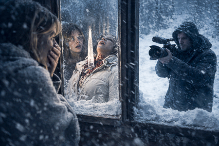
SOLE
(Horrorizada)
Dios… qué fuerte… Qué fuerte, por favor… ¿Esto está pasando de verdad?
Los tres quedan allí, en silencio.
SOLE
Tenemos que moverlos.
ANGELA RAW
¿Mover… qué? Perdona, necesito entender esto con calma.
NATE, SOLE y ANGELA RAW arrastran el cuerpo de JOSÉ FIT dejando un rastro
de sangre en el suelo que divide la estancia en dos.
Al otro lado de la línea está OJOAVIZOR, quieto, con los brazos cruzados,
SOLE
Podías… ayudar, ¿no te jode?
OJOAVIZOR
Yo no voy a jugar a vuestro juego. Guardaros la narrativa oficial para
otro.
SOLE suelta el cadáver un segundo para encararlo.
SOLE
¿Pero esto qué es? ¡Que han muerto personas, joder! ¡Y por tu culpa!
OJOAVIZOR
¿Mi culpa? La pregunta es… ¿por qué ha pasado esto aquí?
(Señala a ANGELA RAW)
Aquí nadie es santo.
ANGELA RAW aparta la mirada.
NATE
Vamos. No perdamos tiempo.
SOLE
Mi cerebro no procesa esto.
Nada de esto.
SOLE, furiosa, vuelve a agarrar el cadáver de un brazo.
OJOAVIZOR sonríe.
EXT. CASA PIRENAICA LATERAL CASA - MEDIODÍA
Arrastran el cuerpo de JOSÉ FIT junto al de LA DIVA y el de TÍO PACO.
SOLE
Joder… Estaba fuerte el cabrón.
Los tres se apoyan en las paredes, extenuados.
ANGELA RAW los mira y retrocede un par de pasos.
ANGELA RAW
No puedo seguir aquí.
ANGELA RAW se va. NATE y SOLE se quedan solos, mirando los cuerpos.
SOLE
¿Te das cuenta…? Somos menos cada hora.
NATE mira los cuerpos en el suelo.
NATE
Esto no estaba en el guión.
Silencio.
INT. CASA PIRENAICA / ENTRADA / COCINA - MEDIODÍA
La puerta se abre y ANGELA RAW entra, temblorosa. Se detiene.
En la mesa del salón, OJOAVIZOR come tranquilo uno de los “tuppers” de
José Fit.
ANGELA RAW lo mira. OJOAVIZOR alza lentamente la vista. Sus miradas se
encuentran.
OJOAVIZOR sonríe. Se limpia la boca con la manga.
OJOAVIZOR
¿Quieres?
ANGELA RAW lo observa unos segundos más. Da la vuelta y se marcha.
OJOAVIZOR sigue comiendo, sin prisa.
EXT. CASA PIRENAICA LATERAL CASA - MEDIODÍA
NATE Y SOLE miran al vacío.
NATE
Podría haberla ayudado… Solo tenía que avisarle. Agarrarla… Y en vez de
eso… seguí grabando.
Aprieta los puños. Los ojos se le humedecen.
SOLE se aproxima despacio.
SOLE
Eh, Nate… No vayas por ahí.
NATE no reacciona. Sigue mirando a la nada.
NATE
Este sitio… Dios… este sitio me está volviendo loco.
SOLE lo rodea con los brazos.
SOLE
Claro que sí. A cualquiera. Pero seguimos aquí. ¿Vale? VIVOS.
Él asiente.
SOLE
Yo no he pasado por todo esto para volver a una caja del “Mercadona”
sonriendo a imbéciles por ofertas de yogur.
SOLE se acerca más.
SOLE
Y tú… tú eres demasiado bueno con esto para quedarte dónde estabas.
NATE baja la mirada. Ella lo envuelve con los brazos.
INT. CASA PIRENAICA / COCINA - POR LA TARDE
NATE está apoyado sobre la encimera, repartiendo en cuatro montones la
comida que les queda: latas, sobres, un trozo de pan duro y los “tuppers”
de José Fit.
OJOAVIZOR, sentado con la manta de Tío Paco en los hombros, observa con
ojos brillantes. ANGELA RAW permanece de pie, rígida, lejos de la mesa.
NATE
Esto es lo que hay. Para cuatro.
OJOAVIZOR
Si esto no mejora en dos días… tendremos que plantearnos… otras opciones.
ANGELA RAW
¿Otras opciones? ¿Es una broma? Ni hablar. No vamos a cruzar esa línea.
SOLE
¿Qué? ¿Ahora eres la moralista del grupo? Ángela… Esto no es un retiro
espiritual.
ANGELA RAW mira a NATE, buscando apoyo.
ANGELA RAW
Dime que no estás pensando lo mismo.
NATE no responde.
NATE
Vale… solo estamos hablando. Ninguno queremos hacerlo. Pero si esto sigue
así…
ANGELA RAW
¡Es canibalismo! ¡Canibalismo, joder! Es Inhumano…
OJOAVIZOR
¿Inhumano? ¿Y empujar a alguien de un tejado qué es?
ANGELA RAW
Fue un accidente. ¡Un accidente!
SOLE
Eso se puede comprobar. Solo hay que ver el vídeo de Nate y salir de
dudas.
NATE la mira fijamente. ANGELA RAW retrocede.
ANGELA RAW
No… no me hagáis esto.
ANGELA RAW da media vuelta y se va. Los otros tres se quedan mirando como
desaparece entre las sombras del salón.
INT. CASA PIRENAICA / HABITACIÓN ANGELA RAW - ATARDECER
ANGELA RAW entra apresuradamente en la habitación y cierra la puerta. Se
apoya contra la puerta unos segundos, respira.
Se sienta en la cama. Saca el móvil, tiene muy poca batería, todavía sin
señal. Abre “Whatsapp” y ve el mensaje que envió a su ex novio. Sigue sin
respuesta.
Levanta lentamente la vista. Se mira al espejo. Se acerca al espejo
mirándose como si no se conociera.
ANGELA RAW
Que os jodan…
Coge su mochila y empieza a meterse sus cosas.
Se baja ligeramente el pantalón y se pone un parche de nicotina en el
culo.
Camina hacia la puerta… pero se detiene. Retrocede hasta la ventana. La
abre y coloca un objeto para dejarla abierta.
Luego arrastra la mesilla y la encaja contra la puerta, impidiendo que se
cierre.
Sale.
INT. CASA PIRENAICA / SALÓN / ENTRADA - ATARDECER
ANGELA RAW baja las escaleras despacio y sin hacer ruido.
En el salón, SOLE, OJOAVIZOR y NATE están sentados alrededor de la mesa,
abrigados, envueltos en mantas, parecen hinchados o deformes. Están
iluminados por una luz central sobre la mesa.
ANGELA RAW se queda parada detrás de la puerta, observando. Desde su
perspectiva, las tres figuras parecen tres “troles” alrededor del fuego.
OJOAVIZOR
Lo lógico es empezar por José. Mucha proteína. Poca grasa. Y no se va a
notar el trozo que falte.
ANGELA RAW se tapa la boca. Saca su móvil para grabarlos. La pantalla se
enciende un segundo. Ese destello ilumina su rostro en la oscuridad.
OJOAVIZOR levanta la cabeza y vuelve la vista hacia ANGELA RAW.
OJOAVIZOR
Las paredes tienen ojos, y… escuchan.
SOLE y NATE se giran.
ANGELA RAW da un paso atrás.
Los tres se levantan lentamente.
ÁNGELA RAW sale disparada hacia la puerta, la abre y se lanza al exterior
helado.
Desde el interior, los tres observan a ANGELA RAW alejarse.
EXT. MONTAÑA - ATARDECER
ANGELA RAW camina por el bosque. Todo es nieve a su alrededor.
Desorientada. Agotada.
ANGELA RAW
(Temblando)
Vamos… vamos… sigue…
Entre los árboles… una columna de humo. ANGELA RAW abre bien los ojos. Y
corre hacia allí con las pocas fuerzas que le quedan.
ANGELA RAW
El universo te habla…
EXT. CASA EQUIPO TÉCNICO - ATARDECER
ANGELA RAW llega a la casa y se asoma por una ventana.
INT. CASA EQUIPO TÉCNICO - ATARDECER
MACREADY, rodeado del equipo técnico, están bebiendo y jugando a juegos de
mesa.
MACREADY
¡No puedes construir un camino ahí, Rafa! ¡No tienes madera!
Risas.
EXT. CASA EQUIPO TÉCNICO - ATARDECER
ANGELA RAW se separa de la ventana. Furiosa.
ANGELA RAW
Hijo… de… puta.
Avanza hacia la entrada.
INT. CASA EQUIPO TÉCNICO - ATARDECER
ANGELA RAW abre la puerta de golpe. Los TÉCNICOS se levantan de un salto.
Silencio. MACREADY se queda inmóvil al verla.
MACREADY
(Boquiabierto)
¿Ángela…?
Ella no responde y cruza la sala. Lo agarra del cuello de la camisa.
ANGELA RAW
¿¡Qué COÑO haces aquí!? ¿Jugando al Catán!? ¿¡En serio!?
Los técnicos retroceden.
MACREADY
Bueno… nunca he sido muy de “Risk”.
Ángela aprieta más los puños en su camisa.
ANGELA RAW
¡Ha Muerto Gente!
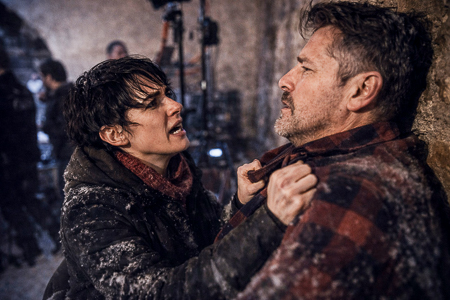
MACREADY se queda pálido.
MACREADY
¿Muerto…? ¿Quién? ¿Cómo?
Un segundo de silencio. Ella lo suelta. Los TÉCNICOS se miran.
MACREADY recupera la compostura.
MACREADY
(Serio)
¿Nate lo ha grabado? Dime que lo ha grabado todo.
ANGELA RAW lo mira con horror. Se aparta de él, recorriendo la habitación
con la mirada.
ANGELA RAW
¿Y cómo…? Estáis calientes. Tenéis luz. Chimenea.
RAFA
Había un generador. Fue fácil. Nos organizamos desde el primer día.
ANGELA RAW se relaja.
ANGELA RAW
Necesito cargar mi móvil… tengo uno por ciento…
Le ofrecen un cable. ANGELA RAW lo coge sin mirar y carga el móvil, sin
soltarlo agachada en una esquina. No deja de mirar a MACREADY.
ANGELA RAW
Tú nos dejaste tirados. TE OLVIDASTE DE NOSOTROS.
MACREADY
No. ¡Fui a buscar ayuda!
ANGELA RAW
Mentira. A ti solo te preocupa salvar tu culo.
MACREADY se pone en pie.
MACREADY
Mañana volveremos. Esto merece ser contado bien.
ANGELA RAW
No. Si alguien va contar lo que pasó voy a ser yo.
Los TÉCNICOS se miran entre sí.
MACREADY
Descansad. Mañana no grabaremos un programa… grabaremos historia. Y lo que
ocurra allí… vivirá para siempre.
ANGELA RAW mira la pantalla de su móvil cargando. Sin señal.
ANGELA RAW
Entiendo que, seguimos sin internet, ¿no?
Todos se giran a mirarla. Nadie responde.
INT. CASA PIRENAICA / SALÓN - NOCHE
SOLE y NATE están abrazados en el sofá, envueltos juntos en una manta.
Bajo la manta hay actividad.
SOLE
Oye… ven aquí. Aprovechemos ahora que ronca el amigo…
Mira a OJOAVIZOR, que está dormido en el suelo, roncando, liado en su
manta. SOLE también lo mira, con asco contenido.
SOLE
Da mal rollo. Ese tío no está bien.
SOLE piensa un instante.
SOLE
Mira Nate… Este tío no está bien. Si se despierta y nos pilla dormidos,
igual mañana no lo contamos.
A NATE le da un escalofrío.
SOLE
Por eso… Creo que tú deberías hacer guardia esta noche. Yo necesito estar
descansada si mañana queremos sobrevivir.
NATE la mira, inseguro.
NATE
¿Yo solo…?
SOLE
Sinos quedamos dormidos los dos… igual mañana no lo contamos.
Una pausa. NATE asiente.
NATE
Vale. Haré guardia.
SOLE lo besa en la mejilla.
SOLE
Sabía que podía confiar en ti. Buenas noches.
Se enrosca en la manta, cierra los ojos… pero los vuelve a abrir para
mirar a cámara y sonreír. Luego los vuelve a cerrar.
En la oscuridad, OJOAVIZOR abre los ojos, sin dejar de roncar.
FUNDIDO A NEGRO
EXT. CASA EQUIPO TÉCNICO - AMANECER
En mitad del paisaje nevado, la casa del equipo técnico aparece despejada.
El humo que sale de la chimenea.
Sobre la imagen aparece el cartel:
Temperatura Exterior: -5º
Temperatura Interior: 4º
INT. CASA EQUIPO TÉCNICO - AMANECER
El equipo técnico y MACREADY se preparan para salir. La sala común es un
pequeño hervidero: mochilas abiertas, walkies cargando, termos llenos de
café. Todos se mueven con rapidez: la mañana huele a urgencia. MACREADY,
de pie en centro da órdenes.
MACREADY
Oídme todos. Salimos en dos horas. Yo llego primero. Veo lo que hay. Tomo
el pulso. Cuando tenga el escenario claro… entráis vosotros.
ÁNGELA RAW
¿De verdad? ¿Vas a hacerte el héroe de algo que ni has visto?
MACREADY sonríe.
MACREADY
Alguien tiene que hacerlo bien.
ÁNGELA RAW
Deberíamos ir todos. Hay gente allí. Asustada. Descontrolada. Igual se
están haciendo daño.
MACREADY
Todos deberíamos ir ya. Hay gente allí. Están descontrolados. Igual se
están haciendo daño.
RAFA le acerca su abrigo y un móvil al 100% de batería.
RAFA
Batería completa.
MACREADY
Gracias. Tú eres el número uno.
RAFA sonríe.
ÁNGELA RAW se levanta de golpe.
ÁNGELA RAW
Yo voy contigo. No voy a quedarme aquí mientras tú te cuelgas la medalla.
De pronto, un sonido: PIP, PIP, PIP Suenan diferentes móviles.
Notificaciones encendiéndose una tras otra.
Los TÉCNICOS sacan sus móviles. La conexión ha vuelto.
TÉCNICO 1
¡Tengo señal!
TÉCNICO 2
¡Me ha entrado un mensaje!
MACREADY alza sus brazos como si rezara.
MACREADY
¡Este es el momento! No podemos esperar ni un minuto. Tengo que llegar
antes que nadie. Mostrar el horror. Mostrar la verdad. ¡Esto va a reventar
internet!
El móvil de ANGELA RAW vibra en su bolsillo. Mira la pantalla.
MENSAJE ENTRANTE: EX – “¿Podemos hablar?
ANGELA RAW respira hondo. MACREADY ya va hacia la puerta.
MACREADY
¡El héroe se va! Rafa, tú quédate. Alguien debe mantener la chimenea
encendida.
ÁNGELA RAW duda un segundo. Mira el teléfono. Mira a MACREADY. Mira de
nuevo el teléfono. ANGELA RAW manda un mensaje de voz mientras de a
MACREADY alejarse.
ÁNGELA RAW
(Al teléfono)
Ahora no puedo. Estoy en medio de algo muy feo. Si todo sale bien… te
llamo.
Se guarda el móvil en el bolsillo y corre hacia la puerta.
ÁNGELA RAW
¡Espera!
ÁNGELA RAW sale de la casa corriendo en dirección a MACREADY.
INT. CASA PIRENAICA / SALÓN - POR LA MAÑANA
Sobre la imagen aparece el cartel:
Temperatura Exterior: -5º
Temperatura Interior: 3º
INT. CASA PIRENAICA / SALÓN - POR LA MAÑANA
OJOAVIZOR da vueltas alrededor de la mesa, murmurando.
OJOAVIZOR
(Para sí mismo)
Están entre nosotros. Conspirando. No se fían de ti. Yo sí lo sé. Yo lo
veo.
SOLE y NATE lo observan desde el sofá, envueltos en mantas.
SOLE
(A NATE)
Este ha perdido completamente la cabeza.
NATE
¿Habla de nosotros?
SOLE
De todos. Grábalo. Esto ya es oro puro.
NATE la mira. SOLE le acaricia el brazo y asiente con la cabeza.
SOLE
Coge la cámara.
NATE se arrastra por el suelo hasta la cámara. La coge y apunta hacia
OJOAVIZOR. Pero ya no está en el mismo sitio. Mira arriba y ve a OJOAVIZOR
subido en la mesa y mirándolo como si acechara una presa.
OJOAVIZOR
¿Grabándome…? Sois dos serpientes venenosas. Os he visto. Os oigo por la
noche.
SOLE aprieta la manta contra su pecho. NATE retrocede un paso.
OJOAVIZOR
Queréis pillarme… pero no podéis. Siempre voy un paso por delante.
OJOAVIZOR corre por la mesa y salta por encima de NATE, que se asusta.
OJOAVIZOR desaparece por el pasillo.
NATE y SOLE se miran.
SOLE
Pues ya está. El loco ha decidido encerrarse.
NATE
¿Y si… vuelve a salir?
INT. HABITACIÓN OJOAVIZOR - POR LA MAÑANA
OJOAVIZOR entra y cierra de golpe. Decidido, abre su mesita de noche y
saca la pistola. La acaricia.
OJOAVIZOR
Ya es hora de sacar a la impaciente.
INT. CASA PIRENAICA / SALÓN - POR LA MAÑANA
SOLE y NATE están en el sofá.
SOLE
¿A dónde ha ido? ¿Lo oyes?
NATE
No… y eso es lo peor. Tengo un mal presentimiento.
OJOAVIZOR aparece al fondo del pasillo, pistola en mano. NATE graba como
avanza despacio directo hacia él.
SOLE
¡Esto no estaba en el guión…! ¡Corre!
SOLE echa a correr hacia la cocina. NATE retrocede tembloroso, sin dejar
de grabar.
OJOAVIZOR levanta la pistola frente a él.
NATE se gira y corre detrás de SOLE.
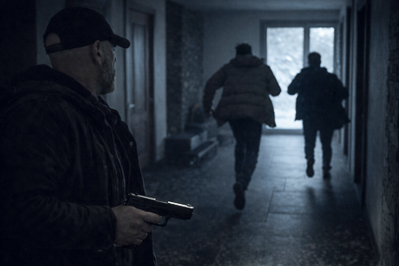
INT. CASA PIRENAICA / SÓTANO - POR LA MAÑANA
SOLE aparece corriendo y baja la escalera del sótano a trompicones,
gritando sin mirar atrás.
SOLE llega al fondo, empuja la puerta y la cierra. Apoya su espalda contra
la pared. Respira como un animal acorralado.
GOLPES en la puerta. SOLE abre los ojos.
NATE (OFF)
¡SOLE! ¡Ábreme, ábreme ya!
SOLE duda un instante. NATE sigue golpeando.
OJOAVIZOR empieza a bajar la escalera del sótano. NATE ve sus pies
descender.
NATE
¡Soy muy joven para morir!
SOLE abre la puerta lo justo para que NATE se cuele, y la cierra de
inmediato. Ambos se apoyan contra la puerta.
OJOAVIZOR llega hasta la puerta.
OJOAVIZOR
¡Y EL LOBO SOPLÓ… Y SOPLÓ… Y LA CASA DERRIBÓ!
OJOAVIZOR golpea la puerta con fuerza. La puerta tiembla con cada
embestida. SOLE aprieta los dientes. NATE levanta la cámara para grabar.
SOLE
¡Ayúdame, NATE! ¡Ayúdame! ¡DEJA LA PUTA CÁMARA Y AYÚDAME, HOSTIA!
NATE duda medio segundo.
SOLE
¡NATE!
NATE deja la cámara sobre su mesa de trabajo. Corre hasta la puerta y
empuja contra ella con su cuerpo.
OJOAVIZOR sigue golpeando la puerta y SOLE y NATE resistiendo.
Y entonces… Silencio.
SOLE y NATE se miran.
SOLE
¿Qué hace? ¿Qué está haciendo?
NATE
Creo que intenta disparar.
OJOAVIZOR apunta la pistola a la puerta. Aprieta el gatillo. La pistola no
dispara. Un CLACK metálico. Nada ocurre. Lo prueba repetidamente.
OJOAVIZOR mira por el cañón de la pistola. Piensa un instante y deja caer
la pistola.
OJOAVIZOR
Todo es falso. La pistola es falsa, la nieve es falsa.
OJOAVIZOR se marcha escaleras arriba.
OJOAVIZOR
Creéis que voy a entrar en vuestro jueguecito… ¡Pues os equivocáis! Me
largo de aquí.
INT. CASA PIRENAICA / SALÓN / ENTRADA – POR LA MAÑANA
OJOAVIZOR avanza por el pasillo con la pistola en las manos. Paso firme.
OJOAVIZOR
(Para sí mismo)
Desde el principio lo vi claro. Soy el único despierto. El único que no se
traga esta mierda.
Se detiene frente al espejo del pasillo. Se mira fijamente. Mira la
pistola y la deja caer.
Abre la puerta principal y sale, dejando la puerta abierta.
OJOAVIZOR
No vais a engañarme. No. Hoy gano yo. Hoy gano yo…
Su voz se pierde mientras se aleja.
EXT. MONTAÑA - POR LA MAÑANA
MACREADY y ANGELA RAW avanzan por la nieve. Caminan demasiado cerca,
chocándose hombro con hombro.
MACREADY acelera. ÁNGELA RAW también. MACREADY da una zancada más larga.
MACREADY acelera aún más. ÁNGELA RAW hace lo mismo.
Vistos de lejos, se pierden diminutos en un bosque nevado.
INT. CASA PIRENAICA / SÓTANO - POR LA MAÑANA
SOLE y NATE están sentados en el suelo contra la puerta, aún jadeando.
SOLE lo mira de reojo.
SOLE
¿Y tú? ¿En qué puto momento pensabas dejar la cámara, Nate? ¿Cuándo
entrase y nos volase la puta cabeza?
NATE respira hondo. La mira dolido.
NATE
Cuando elegiste salir corriendo y me dejaste ahí, como un señuelo. ¡Un
anzuelo para el puto psicópata!
SOLE
No digas tonterías. ¡La pistola no funcionaba!
NATE
¡Pero no lo sabíamos!
NATE la mira, dolido de verdad.
NATE
Yo pensé… que había algo real entre nosotros.
SOLE
Ay, Nate… Eres adorable. No fue “algo”. Fue un calentón. Tú siempre buscas
que alguien te diga qué hacer.
SOLE busca en sus bolsillos su teléfono pero no lo encuentra.
SOLE
¡Joder! Mi teléfono. Me lo he dejado arriba. No hay tiempo para llorar,
Nate. Tenemos que salir de aquí. Hay que seguir con el show.
NATE se levanta también.
NATE
Tú ya estás fuera el show. Te veo en el “Mercadona”.
SOLE agarra una batería de la mesa y se la lanza a NATE. ¡PUM!
NATE se tambalea mareado. Corre hacia ella y la embiste con todo su peso.
Caen al suelo. La cámara y la taza de NATE caen al suelo. La TAZA se hace
añicos.
NATE intenta estrangularla. SOLE lo araña y patalea defendiéndose.
Finalmente, ella le muerde el cuello, arrancando un trozo de piel. NATE
grita.
SOLE agarra un bolígrafo del suelo y se lo clava a NATE. Ella lo aparta y
se arrastra zafándose de él.
NATE la agarra del tobillo y la arrastra hacia él. NATE coge del suelo un
trozo de taza rota y se la clava en la pierna a SOLE. SOLE aúlla de dolor.
Los dos sangran, los dos jadean, retozando en el suelo. Se arrastran él
uno hacia el otro, como dos animales moribundos empeñados en una última
pelea. Cara a cara. Se detienen. Ambos apoyan sus frentes, temblando.
Respiran el mismo aire. Durante un segundo, parecen a punto de besarse.
NATE
Podía haberte hecho una estrella.
SOLE acaricia su rostro. Luego su mano baja… para buscar un
destornillador. Lo agarra. Se miran. SOLE lo apuñala. NATE le tapa la
boca. SOLE continúa apuñalándolo con el destornillador. NATE se coloca
sobre ella.
Sangre. Jadeos. La cámara de NATE desde el suelo graba la escena.
EXT. CASA PIRENAICA - MEDIODÍA
ANGELA RAW y MACREADY llegan a la casa. Frente a la entrada,
semienterrados en nieve, están los cuerpos de TÍO PACO, JOSÉ FIT y LA
DIVA, dispuestos casi en fila. MACREADY se detiene a ver los cuerpos. Se
lleva las manos a la boca.
MACREADY
Dios mío… Dios mío, Paco… Si hubiera llegado antes… sino hubiera… sino…
ANGELA RAW
Los sacamos fuera para conservarlos.
MACREADY
¡Ángela, por favor! Esto es HORRIBLE…
(Pausa)
A la audiencia le va a fascinar. Aunque igual “Youtube” me desmonetiza.
INT. CASA PIRENAICA / ENTRADA - MEDIODÍA
La puerta está abierta. MACREADY entra primero. ANGELA RAW le sigue,
cautelosa. Cierra la puerta.
Silencio.
ANGELA RAW
Esto es extraño. Demasiado tranquilo.
MACREADY
¡Nate! ¡Nate, coño! ¿Dónde está la puta cámara?!
No hay respuesta.
ANGELA RAW baja la mirada. En el suelo, junto al mueble del recibidor: una
pistola.
ANGELA RAW
¿… Eso es…?
MACREADY se gira. La ve. Ambos se miran.
MACREADY
¿Pero qué cojones ha pasado aquí dentro…? Esto no estaba en el guión…
De repente. LUZ. Las luces se encienden. Las lámparas parpadean, el
“router” pita, el microondas emite un pitido, la nevera ronronea.
Los móviles suenan. Llegan notificaciones.
ANGELA RAW
La señal… ha vuelto…
MACREADY mira su móvil encendiéndose. Luego mira la casa. Luego a Ángela.
Sonríe despacio.
MACREADY
Perfecto.
INT. CASA PIRENAICA / SET DE GRABACIÓN - POR LA MAÑANA
MACREADY entra en la sala. Se mira en uno de los monitores.
ANGELA RAW lo observa desde detrás, con el móvil en la mano.
MACREADY se sienta en un sillón.
MACREADY
Chicos… he vuelto. Y os traigo la verdad… la crudeza… Lo que hemos vivido
aquí… nadie… NADIE… os lo contará como yo.
MACREADY se levanta y enciende las cámaras. Ajusta un foco, coloca un
micro. Y por último aprieta un botón.
MACREADY
Dos minutos y estamos en directo. Ángela… déjame a mí. Esto requiere…
carisma.
ANGELA RAW lo observa con el móvil en la mano.
ANGELA RAW
Y una mierda…
Enciende el DIRECTO de “Instagram”.
ANGELA RAW
Lo que ha pasado aquí dentro, lo que hemos vivido, tenéis que saberlo…
MACREADY se gira al escucharla y se queda petrificado.
MACREADY
¿Estás… en directo?
ANGELA RAW le planta el móvil delante de la cara.
ANGELA RAW
La gente merece saber la verdad. No tu versión.
MACREADY le arrebata el móvil de un manotazo.
MACREADY
¡Ni se te ocurra! ¡No vas a robarme MI momento! ¡MI show! ¡MI historia!
¡MI gente!
ANGELA RAW trata de recuperarlo. Él levanta el brazo, sosteniendo el móvil
en alto.
Pausa el DIRECTO.
ANGELA RAW le da un puñetazo en el estómago. MACREADY se dobla y ella
agarra el móvil. Forcejean. Ninguno lo suelta.
MACREADY
Si abres la boca… cuento lo de la IA. Tus viajes. Tu selva. Que no has
pisado ni medio desierto. Todo mentira.
ANGELA RAW suelta el móvil.
MACREADY
¿Quieres que el mundo lo sepa?
ANGELA RAW
No voy a dejar que te vendas como un salvador…
MACREADY le sonríe.
MACREADY
Los héroes son los que se cuentan como héroes. Los demás… acaban en la
nieve… Tú no puedes detenerme.
ANGELA RAW lo mira fijamente. Su expresión cambia.
ANGELA RAW
¡Hijo de puta! Por encima de mi cadáver.
Aprieta los labios y corre hacia él. Lo embiste. Los dos chocan contra una
mesa y caen al suelo.
ANGELA RAW busca su móvil en el suelo.
MACREADY
¡Zorra chiflada!
MACREADY trata de ahogarla con sus propias manos.
ANGELA RAW coge un pie de micro y golpea a MACREADY en la sien. La sangre
empieza a brotar en el rostro de MACREADY. ANGELA RAW lo ve y se abruma.
ANGELA RAW
¡Basta, por favor! ¡Basta! Esto no tiene sentido.
MACREADY, aturdido y furioso, le da un empujón y ella cae contra el suelo
quedándose sin aire. Tose, se arrastra, y entonces ve la pistola de
OJOAVIZOR tirada en el suelo. ANGELA RAW gatea hacia la pistola.
MACREADY la persigue dando patadas. Agarra las piernas y se la lleva una
parte de la sala a otra.
MACREADY
¡Vas a arruinarlo todo! Tú no puedes detenerme. ¡No vas a joderme el
especial, cariño!
ANGELA RAW se mete bajo la mesa para protegerse.
MACREADY
Ángela, esto se nos está yendo de las manos…
Él intenta agarrarla del tobillo. ANGELA RAW sale de debajo de la mesa en
dirección a la PISTOLA. MACREADY se levanta y corre hacia allí. ANGELA RAW
coge la pistola. MACREADY se le lanza encima. Ambos caen uno encima de
otro, sin soltar el arma, forcejeando.
MACREADY
¡Dámela, coño! No tienes huevos para usarla.
MACREADY está sobre ANGELA RAW, le da un cabezazo y logra quitarle la
PISTOLA y le apunta. ANGELA RAW se paraliza del miedo. MACREADY aprieta el
gatillo. CLIC. No hay disparo. CLIC, CLIC, CLIC.
MACREADY mira la pistola con cara de idiota.
MACREADY
¿Pero qué…? ¿QUÉ MIERDA ES ESTA?
En ese instante, el ordenador del set emite un sonido. La cámara central
está en DIRECTO.
MACREADY se levanta hacia la cámara. ANGELA RAW le da una patada en los
huevos que lo dobla. MACREADY cae al suelo gritando.
Ella le arranca la pistola de las manos. Se coloca encima de él.
ANGELA RAW
¡ERES UN FALSO PROFETA!
ANGELA RAW le golpea repetidamente la cabeza con la culata de la pistola,
a modo de martillo. La sangre salpica.
El directo sigue grabando. La gente se conecta. Los corazones y
comentarios suben en pantalla.
La cabeza de MACREADY acaba aplastada contra el suelo. Un charco denso se
forma bajo él.
Silencio.
ANGELA RAW, cubierta de sangre, se arrastra por el suelo hasta alcanzar la
mesa donde está el micrófono y la cámara principal.
Su rostro emerge tras la mesa, pero ya no es su rostro. No es la ANGELA
RAW que habíamos visto.
Mira fijamente a cámara, con el rostro desencajado, la mirada turbia, la
respiración sofocada.
ANGELA RAW
A todos los que os estáis conectando… Bienvenidos. Ahora empieza la
verdad.
Se acerca un poco más.
INT. CASA PIRENAICA / ENTRADA - POR LA MAÑANA
Una gota de sangre cae. Luego otra. En el suelo una mancha de sangre
recorre desde la puerta del sótano, pasando por la entrada y el salón
hasta llegar a la habitación preparada como set de grabación.
ANGELA RAW (OFF)
Queréis la verdad. Queréis toda la sangre. Queréis el infierno entero. Os
espero en mi canal.
ANGELA RAW desconecta el directo. E inicia sesión con su cuenta.
INT. CASA PIRENAICA / SET DE GRABACIÓN - POR LA MAÑANA
ANGELA RAW levanta la mirada y ve a SOLE en el monitor. Avanza por detrás
de ella, camina torpemente. En sus manos sostiene la cámara de NATE.
SOLE
¿Quieres contar la verdad?
ANGELA RAW gira despacio.
SOLE
Pues vamos a contarla.
SOLE avanza. Cada paso deja gotas de sangre en el plató.
SOLE
¿Quieres fama, Ángela? ¿Quieres tu versión? Vamos a ver juntas cómo la
empujaste del tejado.
ANGELA RAW
No fue así. Fue un accidente.
SOLE
Confiesa, zorra...
ANGELA RAW niega con la cabeza.
ANGELA RAW
Fue un accidente. Yo… yo intenté… Ella intentó tirarme. Yo… solo… Ella se
resbaló.
SOLE sonríe. ANGELA RAW frunce el ceño.
SOLE
Eso… era justo lo que necesitaba.
ANGELA RAW
Te voy a arrancar esa puta cámara de las manos.
SOLE
Pues ven por ella.
ANGELA RAW se lanza sobre SOLE. Ambas se tambalean y chocan contra una de
las cámaras, tirándola al suelo y rompiéndose en pedazos.
La cámara principal se conecta en DIRECTO. Ambas en el suelo forcejean. El
número de espectadores del directo empieza a subir.
SOLE agarra a ANGELA RAW por las mejillas, metiéndole los dedos por la
boca. ANGELA RAW le muerde.
SOLE
(Gritando)
¡Puta!
ANGELA RAW le agarra del pelo, arrancando un mechón entero. Ambas ruedan.
ANGELA consigue ponerse encima. Le clava el antebrazo en la garganta a
SOLE, empujando, apretando.
SOLE patalea. Trata de resistirse y hunde el pulgar en el ojo de ANGELA
RAW, que grita llevándose las manos a la cara.
SOLE se levanta torpemente. Agarra un foco del set y se lo estampa en la
cabeza. La lámpara se rompe en mil pedazos. ANGELA cae de rodillas,
aturdida. La sangre gotea por su frente.
SOLE coge un trípode como si fuera un bate. Trata de golpear a ANGELA RAW
pero esquiva el golpe. Al fallar el golpe con el trípode golpea otras
luces que están colgando y estallan chispas.
ANGELA RAW gatea hacia atrás y encuentra un cable de sonido, grueso,
largo, resistente. Lo enrolla en la mano, lo tensa, lo empuña como un
látigo. Y empieza a azotar a SOLE. Cada latigazo deja una marca roja en
los brazos, la espalda o la cara de SOLE.
SOLE ruge de dolor y rabia. Atrapa el cable y se lanza sobre ella. Las dos
caen juntas, chocando contra un montón de aparatos. Se revuelcan por el
suelo, arañando, mordiendo, tirando del pelo, dándose manotazos torpes y
desesperados.
ANGELA RAW consigue pasar el cable alrededor del cuello de SOLE. Lo cruza.
Tira hacia atrás con todas sus fuerzas. El ruido del cable apretándose en
el cuello de SOLE: CRRRK-CRRRK-CRRRK.
SOLE golpea a ANGELA RAW en los costados. Le clava las uñas en las
mejillas, arañando su cara y dejando una marca visible. ANGELA RAW aprieta
y aprieta el cable. SOLE empieza a quedarse sin aire. La lengua se asoma.
Un hilo de baba cae. Los ojos se ponen vidriosos.
SOLE agarra del suelo un trozo de metal y lo clava en las costillas de
ANGELA RAW.
ANGELA RAW suelta el cable al instante. SOLE, retomando el aire, intenta
quitarse el cable del cuello, tosiendo sangre y lágrimas.
SOLE trata de desenroscarse el cable del cuello. ANGELA RAW se levanta
desorientada y choca con el “gran panel” de MACREADY sonriendo a cámara.
ANGELA RAW agarra el gran panel y lo tira sobre SOLE. SOLE levanta la
vista para ver caer el panel.
SOLE queda aplastada bajo la cara enorme de MACREADY.
Silencio. ANGELA RAW respira agitada.
El estudio está devastado. Paneles rotos. Cables arrancados. Tras ella
saltan chispas. La cámara sigue en DIRECTO. Ella mira a cámara.
EXT. CASA PIRENAICA - POR LA MAÑANA
El equipo técnico llega a la casa.
INT. CASA PIRENAICA / SET DE GRABACIÓN - POR LA MAÑANA
El panel gigante de MACREADY sigue aplastando el cuerpo inmóvil de SOLE.
ANGELA RAW, con un ojo ensangrentado, como si fuera un boxeador después de
pelear 12 asaltos, arrastra una silla hasta colocarse frente a la cámara
principal y se sienta. Agarra el micrófono.
Los suscriptores de ANGELA RAW comienzan a subir aceleradamente. ANGELA
RAW levanta la vista para mirar a cámara.
ANGELA RAW
Si queréis la verdad… dadle “Like”.
ANGELA RAW sonríe orgullosa.
FUNDIDO A NEGRO
INT. CASA EQUIPO TÉCNICO - POR LA TARDE
Una tetera humeante. RAFA sirve una taza de té y se la da a OJOAVIZOR que
la recibe agradecido, sentado en el sofá. RAFA se sienta a su lado.
RAFA
Toma, esto te calentará.
OJOAVIZOR recibe agradecido la taza.
RAFA
¿Te apetece jugar? ¿Sabes cómo funciona?
RAFA ofrece los dados a OJOAVIZOR, que da un sorbo y los coge.
OJOAVIZOR levanta la vista. Mira directamente a cámara. Sonríe.
OJOAVIZOR
Aprendo rápido. Juguemos.
OJOAVIZOR sopla los dados y los lanza sobre la mesa. Sonido de dados.